2012-03-27T10:13:22Z
Rajoy anuncia que el presupuesto de los ministerios caerá entre el 14% y el 15%
Rajoy anuncia que el presupuesto de los ministerios caerá entre el 14% y el 15%
20MINUTOS.ES
El presidente ha asistido a la Cumbre de Seguridad Nuclear de Seúl.
Ha avanzado que las cuentas para 2012 "no irán por la vía de subir los impuestos".
Sobre la huelga general del 29-M: "El Gobierno está convencido de lo que ha hecho".
El presidente del Gobierno, Mariano Rajoy, ha expresado su "respeto" al derecho de huelga de los trabajadores el próximo 29-M, pero asegura que el paro general "no va a servir para solucionar los problemas de España" y que el Gobierno "está convencido de lo que ha hecho" con la aprobación de la reforma laboral.Sobre sus primeros cien días de Gobierno, ha explicado que no recuerda un Ejecutivo "que hubiera hecho tantas reformas" en tan poco tiempo, por eso, "probablemente", se haya producido una convocatoria de huelga general, ha añadido durante su comparecencia tras la Cumbre de Seguridad Nuclear de Seúl en la que ha participado junto a medio centenar de líderes. "Hemos fijado el objetivo, hemos marcado un rumbo y hemos tomado decisiones", afirmó.También ha hablado Rajoy de los PGE que el Consejo de Ministros aprobará finalmente el viernes. Ha reiterado que serán "austeros" y que, aunque aún "no está cerrados", no irán "por la vía de subir los impuestos al consumo". Mariano Rajoy ha asegurado que el Gobierno va a intentar "no hacer más daño al consumo" y ha avanzado que la media del recorte por ministerio será entre el 14% y el 15%, frente al 12,5% anunciado inicialmente.Tras la presentación de las cuentas para 2012, ha explicado, habrá "un nuevo capítulo de reformas" que afectarán a los servicios públicos, a la Administración y al sector energético; el Gobierno, ha dicho, "tomará decisiones e intentará ser justo y equitativo". "Les dije a los españoles en campaña y después que vivíamos una situación difícil y que habría que tomar decisiones, que no iban a producir efecto en el corto plazo, pero que había que hacerlo".
20MINUTOS.ES
- El presidente ha asistido a la Cumbre de Seguridad Nuclear de Seúl.
- Ha avanzado que las cuentas para 2012 "no irán por la vía de subir los impuestos".
- Sobre la huelga general del 29-M: "El Gobierno está convencido de lo que ha hecho".
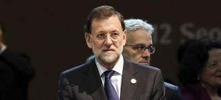
El presidente del Gobierno, Mariano Rajoy, ha expresado su "respeto" al derecho de huelga de los trabajadores el próximo 29-M, pero asegura que el paro general "no va a servir para solucionar los problemas de España" y que el Gobierno "está convencido de lo que ha hecho" con la aprobación de la reforma laboral.
Sobre sus primeros cien días de Gobierno, ha explicado que no recuerda un Ejecutivo "que hubiera hecho tantas reformas" en tan poco tiempo, por eso, "probablemente", se haya producido una convocatoria de huelga general, ha añadido durante su comparecencia tras la Cumbre de Seguridad Nuclear de Seúl en la que ha participado junto a medio centenar de líderes. "Hemos fijado el objetivo, hemos marcado un rumbo y hemos tomado decisiones", afirmó.
También ha hablado Rajoy de los PGE que el Consejo de Ministros aprobará finalmente el viernes. Ha reiterado que serán "austeros" y que, aunque aún "no está cerrados", no irán "por la vía de subir los impuestos al consumo". Mariano Rajoy ha asegurado que el Gobierno va a intentar "no hacer más daño al consumo" y ha avanzado que la media del recorte por ministerio será entre el 14% y el 15%, frente al 12,5% anunciado inicialmente.
Tras la presentación de las cuentas para 2012, ha explicado, habrá "un nuevo capítulo de reformas" que afectarán a los servicios públicos, a la Administración y al sector energético; el Gobierno, ha dicho, "tomará decisiones e intentará ser justo y equitativo". "Les dije a los españoles en campaña y después que vivíamos una situación difícil y que habría que tomar decisiones, que no iban a producir efecto en el corto plazo, pero que había que hacerlo".

2012-03-27T09:07:50Z
Pedro Morenés avanza que el presupuesto de Defensa se reducirá entre un 12% y un 14%
Pedro Morenés avanza que el presupuesto de Defensa se reducirá entre un 12% y un 14%
EFE
Las deudas que acumula el Ministerio ascienden a unos 30.000 millones de euros.
El ministro asegura que su departamento sufrirá los mismos recortes que otros.
La "prioridad absoluta" del Gobierno son las misiones internacionales, ha dicho.
El presupuesto del Ministerio de Defensa para 2012 se reducirá entre un 12% y un 14%. El ministro Pedro Morenés ha avanzado este dato asegurando que su departamento va a sufrir los mismos recortes, "conceptualmente", que otros departamentos y ha recalcado que la "prioridad absoluta" del Gobierno son las misiones internacionales en las que participa España. Las deudas que acumula el Ministerio ascienden a unos 30.000 millones de euros, ha dicho en una entrevista a RNE, confirmando que se renegociará con la industria del sector para revisar los programas y "su alcance cuantitativo". Morenés ha recordado que en los últimos cuatro años se han reducido considerablemente algunas partidas, como la de inversión, cuyo descenso ha cifrado en un 65% al haber pasado de 2.200 millones de euros a 750.Preguntado por si la necesidad de hacer frente a la crisis afectará a las misiones en las que participa España, el ministro ha respondido que el Gobierno atiende "con gran seriedad" a sus compromisos internacionales y la responsabilidad contraída y, como una "tercera derivada", al coste de las operaciones. "El Gobierno tiene muy claro dónde estamos y lo que estamos haciendo es una prioridad absoluta, pasaría por delante de otras restricciones que tenemos que hacer, presupuestarias, en otros ámbitos, incluso dentro del propio ministerio", ha dicho.Morenés ha añadido que la crisis ha puesto a España en una situación difícil desde el punto de vista de la credibilidad de los mercados y que, precisamente, la presencia de las tropas en el exterior "hace que esa falta de credibilidad sea compensada". Respecto a una posible reducción en el número de efectivos de tropa y marinería, ha asegurado que los recursos humanos son "esenciales" para la defensa y ha añadido que su reducción "tiene que ir siempre en la línea de aquello que no es operativo".
EFE
- Las deudas que acumula el Ministerio ascienden a unos 30.000 millones de euros.
- El ministro asegura que su departamento sufrirá los mismos recortes que otros.
- La "prioridad absoluta" del Gobierno son las misiones internacionales, ha dicho.
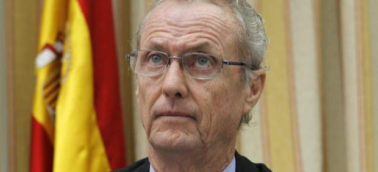
El presupuesto del Ministerio de Defensa para 2012 se reducirá entre un 12% y un 14%. El ministro Pedro Morenés ha avanzado este dato asegurando que su departamento va a sufrir los mismos recortes, "conceptualmente", que otros departamentos y ha recalcado que la "prioridad absoluta" del Gobierno son las misiones internacionales en las que participa España.
Las deudas que acumula el Ministerio ascienden a unos 30.000 millones de euros, ha dicho en una entrevista a RNE, confirmando que se renegociará con la industria del sector para revisar los programas y "su alcance cuantitativo". Morenés ha recordado que en los últimos cuatro años se han reducido considerablemente algunas partidas, como la de inversión, cuyo descenso ha cifrado en un 65% al haber pasado de 2.200 millones de euros a 750.
Preguntado por si la necesidad de hacer frente a la crisis afectará a las misiones en las que participa España, el ministro ha respondido que el Gobierno atiende "con gran seriedad" a sus compromisos internacionales y la responsabilidad contraída y, como una "tercera derivada", al coste de las operaciones.
"El Gobierno tiene muy claro dónde estamos y lo que estamos haciendo es una prioridad absoluta, pasaría por delante de otras restricciones que tenemos que hacer, presupuestarias, en otros ámbitos, incluso dentro del propio ministerio", ha dicho.
Morenés ha añadido que la crisis ha puesto a España en una situación difícil desde el punto de vista de la credibilidad de los mercados y que, precisamente, la presencia de las tropas en el exterior "hace que esa falta de credibilidad sea compensada".
Respecto a una posible reducción en el número de efectivos de tropa y marinería, ha asegurado que los recursos humanos son "esenciales" para la defensa y ha añadido que su reducción "tiene que ir siempre en la línea de aquello que no es operativo".
2012-03-27T05:36:26Z
Diez razones para ir a la huelga general... y otras diez para acudir a trabajar como un día más
Diez razones para ir a la huelga general... y otras diez para acudir a trabajar como un día más
NICOLÁS M. SARRIÉS
Quedan dos días para que se celebre la huelga general del 29-M, convocada por los sindicatos en respuesta a la reforma laboral aprobada por el Gobierno.
Un despido más barato y la "inutilidad" de la reforma laboral, entre las claves que esgrimen los convocantes.
Gobierno y patronal se posicionan en contra del día de paro generalizado porque "no es el momento" y supondrá un alto coste.
Quedan dos días para que se celebre la huelga general del 29-M, convocada por los sindicatos en respuesta a la reforma laboral aprobada por el Gobierno de Rajoy. Los impulsores de la huelga la sexta general de 24 horas en la democracia española han sido UGT y CC OO. Antes de esta convocatoria, y a modo de toma de contacto, organizaron sendas jornadas de protesta por toda España. El objetivo: pulsar el ánimo de la calle y el poder de convocatoria sindical, ya que la anterior huelga general, del 29 de septiembre de 2010 contra los recortes de Zapatero, fue considerada un fiasco.Junto a UGT y CC OO se han situado formaciones políticas como IU, ERC y Equo, entre otras. El PSOE, por su parte, se ha mantenido en una ambigua posición: ha mostrado reiteradamente sus simpatías por la huelga y está en contra de la reforma laboral, si bien sus parlamentarios acudirán a trabajar ese día al Congreso y el Senado.En el lado opuesto, patronal y Gobierno han manifestado su posición contraria al paro general. Para el vicepresidente de la CEOE, Arturo Fernández, "la gente no quiere huelga, quiere trabajo". Similares argumentos maneja el Ejecutivo, que sostiene que causará más daño que beneficios.Por otra parte, este lunes se conocieron algunos servicios mínimos para el 29-M: Renfe prevé cancelar unos 600 trenes de larga y media distancia; e Iberia y su filial Air Nostrum cancelarán 424 vuelos.Probablemente ya tenga decidido en estos momentos si acudirá o no a la jornada de protesta. Sea así o no, 20 minutos recopila diez de los principales argumentos de partidarios y detractores respecto al paro.¿Hay razones para la huelga?
SÍ: Sindicatos, partidos, indignados...
todos tienen motivos para ir el 29-M
NO: Gobierno, patronales y los mercados, a favor de ir al trabajo
1) Despido más barato y fácil. La reforma abarata el despido objetivo a 20 días por año y amplía los supuestos de aplicación (basta una simple previsión de caída de ingresos). Además, ahora es el trabajador el que ha de demostrar que un despido es improcedente, y no al revés.
2) ERE a funcionarios. La nueva legislación perjudica seriamente a millones de empleados públicos: permite los expedientes de regulación de empleo en entidades públicas con ajustes presupuestarios.
3) La precariedad se hace "crónica". La nueva reforma crea un nuevo contrato de "apoyo al empleo" que posibilita ser despedido sin indemnización el primer año; además, ahora los jóvenes pueden encadenar contratos temporales hasta los 30 años, y la empresa puede modificar unilateralmente las condiciones sueldo, horario, jornada... de sus empleados indefinidos.
4) Los parados, a trabajar gratis. Afecta también a los más de 5 millones de parados: desde febrero pueden obligarlos a desempeñar labores a favor de la comunidad si perciben alguna prestación y no están apuntados a ningún curso de formación.
5) Ni rastro de las medidas en el programa electoral. La reforma laboral de Rajoy era apenas una vaga propuesta en el programa electoral. Durante la campaña no dejó entrever que fuera a aprobar algo así. Además, pese a que durante meses se urgió a patronal y sindicatos a llegar a un acuerdo, el Ejecutivo presentó su reforma sin consenso por parte de los trabajadores.
6) Expertos alertan: no creará empleo. Ya lo reconocieron miembros del Gobierno y lo han suscrito economistas y expertos: la reforma no ayudará a crear empleo. "No aborda la dualidad", sostienen en la fundación Fedea; la consultora PwC cree que por sí sola no servirá: "Son necesarias otras reformas que impulsen el consumo y la actividad".
7) La situación es excepcional. Con cinco millones de parados, recortes en todo tipo de servicios y subidas en tasas e impuestos, España sufre una situación inédita en su historia reciente. No parece descabellado convocar la que sería solo la sexta huelga general de la historia española.
8) Es un derecho fundamental. Aunque denostado en los últimos tiempos, el de huelga es un derecho fundamental de la Constitución (art. 28), que se ejerce cuando cada ciudadano lo estime.
9) Despidos incluso con baja médica. La reforma legitima los despidos procedentes para aquellos trabajadores que acumulan nueve días de baja en un mes, aunque sea justificada.
10) Las huelgas a veces funcionan. Ya ocurrió en 2002, con la huelga general que sufrió el expresidente Aznar; entonces, se logró dar marcha atrás a la reforma laboral, aun ya aprobada.
1) Lo que quiere España es trabajo. La huelga no va a cambiar nada ni va a servir para crear más puestos de trabajo, que es lo que necesita la población.
2) Dolorosa, pero necesaria. La reforma laboral del Gobierno puede ser dura para ciertos sectores, pero beneficiosa para el conjunto: flexibiliza el mercado de trabajo y permite buscar vías para evitar el despido en empresas con problemas.
3) Un palo para la economía. Si la huelga general tiene mucho éxito, puede detener la producción económica española; supondría un coste de 1.000 millones de euros, según cálculos efectuados por la patronal.
4) No hay que enfadar a los socios de la UE. La huelga general, si tuviera éxito, podría emparentar a España con países como Grecia, que han acabado siendo intervenidos por la UE ante su negativa a llevar a cabo las reformas necesarias. Además, los mercados financieros tampoco verían con buenos ojos una marcha atrás del Gobierno.
5) Rajoy no ha pasado ni los 100 días. La huelga general se ha convocado sin respetar los conocidos como "100 días", el plazo mínimo que se concede según la costumbre a todo Gobierno para llevar a cabo sus primeras políticas. Por otro lado, la huelga no servirá de mucho, ya que Rajoy no cederá en ningún caso, a la vista del apoyo electoral recibido en las generales.
6) Es una huelga 'política'. Ya advirtió el Gobierno que la oposición se dedicaría a sacar a la gente a la calle en su contra; la huelga, así, no es más que una táctica partidista de desgaste al Ejecutivo.
7) La última huelga es reciente y fracasó. La anterior huelga general, del 29 de septiembre de 2010, apenas recibió apoyo popular. ¿Qué probabilidades hay de que esta nueva protesta vaya a contar con mayor participación?
8) Los sindicatos no han estado a la altura. Desde el inicio de la crisis, los sindicatos no han defendido bien los intereses de la ciudadanía y no merecen que ahora consigan una huelga exitosa.
9) Solo los fijos pueden ir a la huelga. Los trabajadores fijos y los funcionarios son los únicos que tienen el "privilegio" real de ir a la huelga; el resto, por tener un empleo muy precario o ni siquiera trabajar, no.
10) El que se va de huelga no cobra ese día. El derecho de huelga es fundamental, lo que no quiere decir que sea gratis. Ante el panorama de bajada de salarios y aumento de precios, la idea de perder el sueldo de un día puede no parecer la mejor.
NICOLÁS M. SARRIÉS
- Quedan dos días para que se celebre la huelga general del 29-M, convocada por los sindicatos en respuesta a la reforma laboral aprobada por el Gobierno.
- Un despido más barato y la "inutilidad" de la reforma laboral, entre las claves que esgrimen los convocantes.
- Gobierno y patronal se posicionan en contra del día de paro generalizado porque "no es el momento" y supondrá un alto coste.

Quedan dos días para que se celebre la huelga general del 29-M, convocada por los sindicatos en respuesta a la reforma laboral aprobada por el Gobierno de Rajoy.
Los impulsores de la huelga la sexta general de 24 horas en la democracia española han sido UGT y CC OO. Antes de esta convocatoria, y a modo de toma de contacto, organizaron sendas jornadas de protesta por toda España. El objetivo: pulsar el ánimo de la calle y el poder de convocatoria sindical, ya que la anterior huelga general, del 29 de septiembre de 2010 contra los recortes de Zapatero, fue considerada un fiasco.
Junto a UGT y CC OO se han situado formaciones políticas como IU, ERC y Equo, entre otras. El PSOE, por su parte, se ha mantenido en una ambigua posición: ha mostrado reiteradamente sus simpatías por la huelga y está en contra de la reforma laboral, si bien sus parlamentarios acudirán a trabajar ese día al Congreso y el Senado.
En el lado opuesto, patronal y Gobierno han manifestado su posición contraria al paro general. Para el vicepresidente de la CEOE, Arturo Fernández, "la gente no quiere huelga, quiere trabajo". Similares argumentos maneja el Ejecutivo, que sostiene que causará más daño que beneficios.
Por otra parte, este lunes se conocieron algunos servicios mínimos para el 29-M: Renfe prevé cancelar unos 600 trenes de larga y media distancia; e Iberia y su filial Air Nostrum cancelarán 424 vuelos.
Probablemente ya tenga decidido en estos momentos si acudirá o no a la jornada de protesta. Sea así o no, 20 minutos recopila diez de los principales argumentos de partidarios y detractores respecto al paro.
¿Hay razones para la huelga?
SÍ: Sindicatos, partidos, indignados...
todos tienen motivos para ir el 29-M
|
NO: Gobierno, patronales y los mercados, a favor de ir al trabajo
|
|
1) Despido más barato y fácil. La reforma abarata el despido objetivo a 20 días por año y amplía los supuestos de aplicación (basta una simple previsión de caída de ingresos). Además, ahora es el trabajador el que ha de demostrar que un despido es improcedente, y no al revés.
2) ERE a funcionarios. La nueva legislación perjudica seriamente a millones de empleados públicos: permite los expedientes de regulación de empleo en entidades públicas con ajustes presupuestarios.
3) La precariedad se hace "crónica". La nueva reforma crea un nuevo contrato de "apoyo al empleo" que posibilita ser despedido sin indemnización el primer año; además, ahora los jóvenes pueden encadenar contratos temporales hasta los 30 años, y la empresa puede modificar unilateralmente las condiciones sueldo, horario, jornada... de sus empleados indefinidos.
4) Los parados, a trabajar gratis. Afecta también a los más de 5 millones de parados: desde febrero pueden obligarlos a desempeñar labores a favor de la comunidad si perciben alguna prestación y no están apuntados a ningún curso de formación.
5) Ni rastro de las medidas en el programa electoral. La reforma laboral de Rajoy era apenas una vaga propuesta en el programa electoral. Durante la campaña no dejó entrever que fuera a aprobar algo así. Además, pese a que durante meses se urgió a patronal y sindicatos a llegar a un acuerdo, el Ejecutivo presentó su reforma sin consenso por parte de los trabajadores.
6) Expertos alertan: no creará empleo. Ya lo reconocieron miembros del Gobierno y lo han suscrito economistas y expertos: la reforma no ayudará a crear empleo. "No aborda la dualidad", sostienen en la fundación Fedea; la consultora PwC cree que por sí sola no servirá: "Son necesarias otras reformas que impulsen el consumo y la actividad".
7) La situación es excepcional. Con cinco millones de parados, recortes en todo tipo de servicios y subidas en tasas e impuestos, España sufre una situación inédita en su historia reciente. No parece descabellado convocar la que sería solo la sexta huelga general de la historia española.
8) Es un derecho fundamental. Aunque denostado en los últimos tiempos, el de huelga es un derecho fundamental de la Constitución (art. 28), que se ejerce cuando cada ciudadano lo estime.
9) Despidos incluso con baja médica. La reforma legitima los despidos procedentes para aquellos trabajadores que acumulan nueve días de baja en un mes, aunque sea justificada.
10) Las huelgas a veces funcionan. Ya ocurrió en 2002, con la huelga general que sufrió el expresidente Aznar; entonces, se logró dar marcha atrás a la reforma laboral, aun ya aprobada.
|
1) Lo que quiere España es trabajo. La huelga no va a cambiar nada ni va a servir para crear más puestos de trabajo, que es lo que necesita la población.
2) Dolorosa, pero necesaria. La reforma laboral del Gobierno puede ser dura para ciertos sectores, pero beneficiosa para el conjunto: flexibiliza el mercado de trabajo y permite buscar vías para evitar el despido en empresas con problemas.
3) Un palo para la economía. Si la huelga general tiene mucho éxito, puede detener la producción económica española; supondría un coste de 1.000 millones de euros, según cálculos efectuados por la patronal.
4) No hay que enfadar a los socios de la UE. La huelga general, si tuviera éxito, podría emparentar a España con países como Grecia, que han acabado siendo intervenidos por la UE ante su negativa a llevar a cabo las reformas necesarias. Además, los mercados financieros tampoco verían con buenos ojos una marcha atrás del Gobierno.
5) Rajoy no ha pasado ni los 100 días. La huelga general se ha convocado sin respetar los conocidos como "100 días", el plazo mínimo que se concede según la costumbre a todo Gobierno para llevar a cabo sus primeras políticas. Por otro lado, la huelga no servirá de mucho, ya que Rajoy no cederá en ningún caso, a la vista del apoyo electoral recibido en las generales.
6) Es una huelga 'política'. Ya advirtió el Gobierno que la oposición se dedicaría a sacar a la gente a la calle en su contra; la huelga, así, no es más que una táctica partidista de desgaste al Ejecutivo.
7) La última huelga es reciente y fracasó. La anterior huelga general, del 29 de septiembre de 2010, apenas recibió apoyo popular. ¿Qué probabilidades hay de que esta nueva protesta vaya a contar con mayor participación?
8) Los sindicatos no han estado a la altura. Desde el inicio de la crisis, los sindicatos no han defendido bien los intereses de la ciudadanía y no merecen que ahora consigan una huelga exitosa.
9) Solo los fijos pueden ir a la huelga. Los trabajadores fijos y los funcionarios son los únicos que tienen el "privilegio" real de ir a la huelga; el resto, por tener un empleo muy precario o ni siquiera trabajar, no.
10) El que se va de huelga no cobra ese día. El derecho de huelga es fundamental, lo que no quiere decir que sea gratis. Ante el panorama de bajada de salarios y aumento de precios, la idea de perder el sueldo de un día puede no parecer la mejor.
|
2012-03-26T23:49:37Z
España dice que el inventario de Odyssey en Gibraltar es falso y pide sanciones
España dice que el inventario de Odyssey en Gibraltar es falso y pide sanciones
EFE / VÍDEO: ATLAS
Según el Gobierno, era "falso" y "ocultaba" significativos objetos.
Por ello, pidió a un tribunal estadounidense que la sancione por desacato.
CRONOLOGÍA: España y Odyssey, cinco años de litigio.
El Gobierno español aseguró este lunes que el inventario proporcionado por Odyssey de los objetos de "La Mercedes" que quedan en Gibraltar, y que la empresa debe entregar a España, era "falso" y "ocultaba" significativos objetos, por lo que pidió a un tribunal estadounidense que la sancione por desacato.En un escrito remitido esste lunes al Tribunal Federal de Tampa (Florida), la defensa de España asegura que el inventario que la semana pasada se realizó en Gibraltar ante notario "confirma de nuevo" sus sospechas de que Odyssey ocultaba información sobre los objetos que dejó en ese territorio.Después de haber estudiado este nuevo inventario, la parte española cree que el inventario previo que la empresa de exploración submarina presentó el pasado 20 de febrero era "falso" y "ocultaba objetos importantes".El juez Mark Pizzo, del citado tribunal, ordenó a Odyseey la semana pasada la entrega inmediata a España de los objetos que la compañía rescató del fondo del mar en 2007 y que permanecen en Gibraltar desde entonces.El mismo magistrado advirtió a Odyssey de que, de no obrar así, podría incurrir en un delito de desacato civil.Indemnización para el Estado EspañolEn el documeto, España pide al tribunal que proceda de inmediato a decretar que Odyssey ha incurrido en desacato civil y sea sancionada.Aparte de las sanciones solicitadas por desacato al tribunal, se solicita que el Estado español sea indemnizado por entregar un "inventario verificado falso" y por el "ocultamiento, omisión y falseamiento" que han "caracterizado la conducta de Odyssey" en este caso.La entrega de los objetos de Gibraltar es el último paso para se complete el cumplimiento de la sentencia de hace un mes, que obligó a Odyssey a devolver a España el tesoro de la fragata "Nuestra Señora de las Mercedes", compuesto de 17 toneladas de monedas de plato y oro, entre otros objetos.Pese a las varias peticiones de España, el juez por el momento no ha establecido sanciones contra Odyssey por el retraso en cumplir con la sentencia y ha aplazado su decisión al respecto sin concretar fechas.El tesoro formaba parte de la mercancía que transportaba "La Mercedes" cuando fue hundida en 1804 por una flota británica frente a las costas del Algarve portugués.El Estado español pide también al tribunal de Tampa que Odyssey asuma los gastos y honorarios derivados de la entrega de los objetos que permanecen en Gibraltar, algo que la empresa intenta evitar con variados subterfugios legales, según la defensa española.Odyssey entregó a finales de febrero a España un cargamento de más de 500.000 monedas de plata y oro y otros objetos procedentes de "La Mercedes" que habían trasladado a Florida desde Gibraltar, pero allí quedaron un número indeterminado de objetos adicionales.
EFE / VÍDEO: ATLAS
- Según el Gobierno, era "falso" y "ocultaba" significativos objetos.
- Por ello, pidió a un tribunal estadounidense que la sancione por desacato.
-
CRONOLOGÍA: España y Odyssey, cinco años de litigio.
El Gobierno español aseguró este lunes que el inventario proporcionado por Odyssey de los objetos de "La Mercedes" que quedan en Gibraltar, y que la empresa debe entregar a España, era "falso" y "ocultaba" significativos objetos, por lo que pidió a un tribunal estadounidense que la sancione por desacato.
En un escrito remitido esste lunes al Tribunal Federal de Tampa (Florida), la defensa de España asegura que el inventario que la semana pasada se realizó en Gibraltar ante notario "confirma de nuevo" sus sospechas de que Odyssey ocultaba información sobre los objetos que dejó en ese territorio.
Después de haber estudiado este nuevo inventario, la parte española cree que el inventario previo que la empresa de exploración submarina presentó el pasado 20 de febrero era "falso" y "ocultaba objetos importantes".
El juez Mark Pizzo, del citado tribunal, ordenó a Odyseey la semana pasada la entrega inmediata a España de los objetos que la compañía rescató del fondo del mar en 2007 y que permanecen en Gibraltar desde entonces.
El mismo magistrado advirtió a Odyssey de que, de no obrar así, podría incurrir en un delito de desacato civil.
Indemnización para el Estado Español
En el documeto, España pide al tribunal que proceda de inmediato a decretar que Odyssey ha incurrido en desacato civil y sea sancionada.
Aparte de las sanciones solicitadas por desacato al tribunal, se solicita que el Estado español sea indemnizado por entregar un "inventario verificado falso" y por el "ocultamiento, omisión y falseamiento" que han "caracterizado la conducta de Odyssey" en este caso.
La entrega de los objetos de Gibraltar es el último paso para se complete el cumplimiento de la sentencia de hace un mes, que obligó a Odyssey a devolver a España el tesoro de la fragata "Nuestra Señora de las Mercedes", compuesto de 17 toneladas de monedas de plato y oro, entre otros objetos.
Pese a las varias peticiones de España, el juez por el momento no ha establecido sanciones contra Odyssey por el retraso en cumplir con la sentencia y ha aplazado su decisión al respecto sin concretar fechas.
El tesoro formaba parte de la mercancía que transportaba "La Mercedes" cuando fue hundida en 1804 por una flota británica frente a las costas del Algarve portugués.
El Estado español pide también al tribunal de Tampa que Odyssey asuma los gastos y honorarios derivados de la entrega de los objetos que permanecen en Gibraltar, algo que la empresa intenta evitar con variados subterfugios legales, según la defensa española.
Odyssey entregó a finales de febrero a España un cargamento de más de 500.000 monedas de plata y oro y otros objetos procedentes de "La Mercedes" que habían trasladado a Florida desde Gibraltar, pero allí quedaron un número indeterminado de objetos adicionales.
2012-03-26T16:32:33Z
La central de Garoña realiza una parada no programada por un fallo durante una maniobra
La central de Garoña realiza una parada no programada por un fallo durante una maniobra
AGENCIAS
El fallo no ha supuesto ningún peligro para la población o el medio ambiente.
Las autoridades y el Consejo de Seguridad Nuclear fueron avisados.
El Gobierno tiene la intención de no cerrar Garoña en 2013 y dar una prórroga.
La central nuclear de Santa María de Garoña, situada al norte de Burgos, ha realizado este lunes una parada no programada, debida a un fallo detectado durante las maniobras previstas en el programa de bajada de carga para efectuar el cambio de secuencia de barras de control, ha informado la empresa Nuclenor. El Consejo de Seguridad Nuclear y las autoridades pertinentes han sido informados puntualmente de este hecho, como un incidente que no ha supuesto ningún riesgo ni para las personas ni para el medio ambiente, según un comunicado de la empresa propietaria de la planta, próxima al País Vasco.Nuclenor ha precisado que una señal de baja presión en la vasija del reactor ha producido su aislamiento y la inserción automática de las barras de control para frenar el proceso de fisión de combustible y, por lo tanto, la parada inmediata del reactor. Según la empresa propietaria de Garoña, todos los sistemas de la central nuclear han actuado correctamente. Durante la parada de la instalación se realizarán los cambios oportunos y se aprovechará para ejecutar las labores de mantenimiento que están previstas para estas situaciones. Una vez concluidos estos trabajos, se procederá a efectuar las correspondientes pruebas de arranque para conectar de nuevo la planta a la red eléctrica nacional, aunque todavía no se ha precisado en qué momento podría producirse. La planta nuclear burgalesa tiene en este momento una orden ministerial para cerrar en 2013, aunque el Gobierno ha manifestado su intención de conceder una prórroga para varios años más, siempre que el Consejo de Seguridad Nuclear emita un informe favorable sobre sus condiciones de seguridad.
AGENCIAS
- El fallo no ha supuesto ningún peligro para la población o el medio ambiente.
- Las autoridades y el Consejo de Seguridad Nuclear fueron avisados.
- El Gobierno tiene la intención de no cerrar Garoña en 2013 y dar una prórroga.
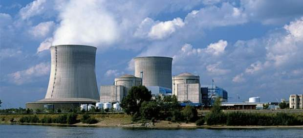
La central nuclear de Santa María de Garoña, situada al norte de Burgos, ha realizado este lunes una parada no programada, debida a un fallo detectado durante las maniobras previstas en el programa de bajada de carga para efectuar el cambio de secuencia de barras de control, ha informado la empresa Nuclenor.
El Consejo de Seguridad Nuclear y las autoridades pertinentes han sido informados puntualmente de este hecho, como un incidente que no ha supuesto ningún riesgo ni para las personas ni para el medio ambiente, según un comunicado de la empresa propietaria de la planta, próxima al País Vasco.
Nuclenor ha precisado que una señal de baja presión en la vasija del reactor ha producido su aislamiento y la inserción automática de las barras de control para frenar el proceso de fisión de combustible y, por lo tanto, la parada inmediata del reactor. Según la empresa propietaria de Garoña, todos los sistemas de la central nuclear han actuado correctamente.
Durante la parada de la instalación se realizarán los cambios oportunos y se aprovechará para ejecutar las labores de mantenimiento que están previstas para estas situaciones. Una vez concluidos estos trabajos, se procederá a efectuar las correspondientes pruebas de arranque para conectar de nuevo la planta a la red eléctrica nacional, aunque todavía no se ha precisado en qué momento podría producirse.
La planta nuclear burgalesa tiene en este momento una orden ministerial para cerrar en 2013, aunque el Gobierno ha manifestado su intención de conceder una prórroga para varios años más, siempre que el Consejo de Seguridad Nuclear emita un informe favorable sobre sus condiciones de seguridad.
2012-03-26T16:01:23Z
El voto a los partidos sin representación crece en Andalucía y baja en Asturias
El voto a los partidos sin representación crece en Andalucía y baja en Asturias
M.M.
A las elecciones autonómicas andaluzas han concurrido 33 formaciones, 30 de las cuales no han obtenido representación en el parlamento regional.
El voto a esos partidos ha crecido dos puntos porcentuales desde 2008.
En Asturias, 16 partidos se quedan sin diputados; el voto a estas formaciones ha caído cinco puntos desde la última convocatoria, celebrada hace 10 meses.
Motivos: UPyD ha entrado en el parlamento y la abstención ha subido 11 puntos.
Todos los resultados en nuestro mapa electoral / Especial elecciones 2012.
El voto a los partidos sin representación en los parlamentos andaluz y asturiano en las elecciones del domingo 25 de marzo ha variado de forma significativa y totalmente diferente en ambas regiones respecto a las anteriores convocatorias.En el caso de Andalucía, el voto conjunto a los partidos pequeños -30 formaciones- ha subido más de dos puntos porcentuales, del 5,02% en 2008 al 7,42%, lo que se traduce en unos 65.500 votos más, de 225.681 votos en 2008 a 291.246 votos este año. Bien es cierto que buena parte de esos votos se los llevan UPyD (129.180), Partido Andalucista (96.608) y Equo (20.544).El partido magenta casi ha multiplicado por cinco sus apoyos, aunque no ha logrado ningún diputado a pesar de contar con 129.000 votos. Si comparamos sus números con los de los partidos más votados -haciendo una media-, al Partido Popular andaluz le ha costado obtener cada escaño unos 31.000 votos, al PSOE-A 32.000 y a IU 36.000. Estas tres formaciones han perdido, en conjunto, 697.895 votos. El PA, por su parte, ha perdido más de 27.000 votos en cuatro años y Equo, que se presentó en 2008 bajo el nombre de Verdes, ha perdido más de 5.000.Crecen el PCE y Fe de las JonsSolo dos formaciones sin representación parlamentaria, además de UPyD, han subido en votos desde 2008: el Partido Comunista de los Pueblos de España (PCPE, antes PCPA), que sube de 2.743 a 4.070 votos (un 0,04%), y Falange Española de las Jons, que sube de 1.763 a 2.393 votos (un 0,02%). La abstención en Andalucía ha crecido diez puntos porcentuales desde 2008, del 27,33% al 37,77%. Por otro lado, hay candidaturas que no se presentaron hace cuatro años y que ahora han logrado un número reseñable de apoyos, como Pacma (8.619), Escaños en Blanco (5.579) o Hartos.org (4.957). El partido que menos votos ha obtenido en estas elecciones autonómicas andaluzas ha sido RISA, el partido Republicano Independiente Solidario Andaluz, con 133 apoyos. También hay candidaturas que este año no han concurrido a los comicios, como el Partido de Almería, que en 2008 fue la tercera fuerza más votada en la provincia en cuestión, pero que tuvo una fuerte caída en los comicios municipales de 2011.Resultados en el PrincipadoEn cuanto a Asturias, el panorama es totalmente distinto, exceptuando la abstención, que ha aumentado en once puntos. Hay que tener en cuenta que los votos nulos y en blanco, en este caso, sí han crecido ligeramente -en las andaluzas se han mantenido prácticamente igual- y que las últimas elecciones autonómicas se celebraron hace solo diez meses.Con esto, el voto conjunto a los partidos sin representación parlamentaria ha disminuido en cinco puntos porcentuales, del 7,58% al 2,55%, es decir, de 45.543 votos a 13.118 votos. Uno de los motivos fundamentales para este cambio es que UPyD entra por primera vez en el parlamento con un diputado y se ha llevado 4.099 votos más que el pasado año; en total ha obtenido 18.739. Por su parte, FSA-PSOE, Foro Asturias, PP e IU han perdido conjuntamente 79.027 votos. La sexta y séptima fuerzas asturianas no concurrieron en 2011, pero aun así han logrado un número de apoyos notable. Escaños en blanco se ha llevado 4.095 votos (0,82%) y Equo-Los Verdes 2.518 (0,50%).PF y V, cinco votosEn estas elecciones, 16 partidos se han quedado sin representación parlamentaria, y ninguno de los que tampoco la lograron el pasado año y se han vuelto a presentar ha subido en votos, salvo UPyD.Es más, partidos como Bloque Por Asturies-UNA-LV-GV (antes Bloque Por Asturies-UNA) han caído mucho, de 6.191 (1.03%) a 1.639 (0,32%) votos; o también Ideas-Hartos.org (antes Ideas), que ha bajado de 6.380 (1,06%) a 737 votos (0,14%). Seis formaciones que concurrieron el pasado año no lo han hecho ahora, como el Frente de la Izquierda (FDLI), que en 2011 obtuvo 4.598 votos.En Asturias, al PSOE le ha costado sumar cada escaño casi 10.000 votos (ha obtenido 159.811 votos, el 32,01%, y 16 diputados); a Foro Asturias, cada escaño le ha salido a unos 9.500 votos (ha obtenido 123.979 votos, el 24,83%, y 13 diputados); y, yendo algo más abajo en los primeros puestos, a UPyD su único escaño le ha costado 18.739 votos. El partido menos votado en estas elecciones ha sido el Partido Familia y Vida (PF y V), con cinco votos.
M.M.
- A las elecciones autonómicas andaluzas han concurrido 33 formaciones, 30 de las cuales no han obtenido representación en el parlamento regional.
- El voto a esos partidos ha crecido dos puntos porcentuales desde 2008.
- En Asturias, 16 partidos se quedan sin diputados; el voto a estas formaciones ha caído cinco puntos desde la última convocatoria, celebrada hace 10 meses.
- Motivos: UPyD ha entrado en el parlamento y la abstención ha subido 11 puntos.
- Todos los resultados en nuestro mapa electoral / Especial elecciones 2012.
El voto a los partidos sin representación en los parlamentos andaluz y asturiano en las elecciones del domingo 25 de marzo ha variado de forma significativa y totalmente diferente en ambas regiones respecto a las anteriores convocatorias.
En el caso de Andalucía, el voto conjunto a los partidos pequeños -30 formaciones- ha subido más de dos puntos porcentuales, del 5,02% en 2008 al 7,42%, lo que se traduce en unos 65.500 votos más, de 225.681 votos en 2008 a 291.246 votos este año. Bien es cierto que buena parte de esos votos se los llevan UPyD (129.180), Partido Andalucista (96.608) y Equo (20.544).
El partido magenta casi ha multiplicado por cinco sus apoyos, aunque no ha logrado ningún diputado a pesar de contar con 129.000 votos. Si comparamos sus números con los de los partidos más votados -haciendo una media-, al Partido Popular andaluz le ha costado obtener cada escaño unos 31.000 votos, al PSOE-A 32.000 y a IU 36.000. Estas tres formaciones han perdido, en conjunto, 697.895 votos.
El PA, por su parte, ha perdido más de 27.000 votos en cuatro años y Equo, que se presentó en 2008 bajo el nombre de Verdes, ha perdido más de 5.000.
Crecen el PCE y Fe de las Jons
Solo dos formaciones sin representación parlamentaria, además de UPyD, han subido en votos desde 2008: el Partido Comunista de los Pueblos de España (PCPE, antes PCPA), que sube de 2.743 a 4.070 votos (un 0,04%), y Falange Española de las Jons, que sube de 1.763 a 2.393 votos (un 0,02%).
La abstención en Andalucía ha crecido diez puntos porcentuales desde 2008, del 27,33% al 37,77%.
Por otro lado, hay candidaturas que no se presentaron hace cuatro años y que ahora han logrado un número reseñable de apoyos, como Pacma (8.619), Escaños en Blanco (5.579) o Hartos.org (4.957). El partido que menos votos ha obtenido en estas elecciones autonómicas andaluzas ha sido RISA, el partido Republicano Independiente Solidario Andaluz, con 133 apoyos.
También hay candidaturas que este año no han concurrido a los comicios, como el Partido de Almería, que en 2008 fue la tercera fuerza más votada en la provincia en cuestión, pero que tuvo una fuerte caída en los comicios municipales de 2011.
Resultados en el Principado
En cuanto a Asturias, el panorama es totalmente distinto, exceptuando la abstención, que ha aumentado en once puntos. Hay que tener en cuenta que los votos nulos y en blanco, en este caso, sí han crecido ligeramente -en las andaluzas se han mantenido prácticamente igual- y que las últimas elecciones autonómicas se celebraron hace solo diez meses.
Con esto, el voto conjunto a los partidos sin representación parlamentaria ha disminuido en cinco puntos porcentuales, del 7,58% al 2,55%, es decir, de 45.543 votos a 13.118 votos. Uno de los motivos fundamentales para este cambio es que UPyD entra por primera vez en el parlamento con un diputado y se ha llevado 4.099 votos más que el pasado año; en total ha obtenido 18.739.
Por su parte, FSA-PSOE, Foro Asturias, PP e IU han perdido conjuntamente 79.027 votos. La sexta y séptima fuerzas asturianas no concurrieron en 2011, pero aun así han logrado un número de apoyos notable. Escaños en blanco se ha llevado 4.095 votos (0,82%) y Equo-Los Verdes 2.518 (0,50%).
PF y V, cinco votos
En estas elecciones, 16 partidos se han quedado sin representación parlamentaria, y ninguno de los que tampoco la lograron el pasado año y se han vuelto a presentar ha subido en votos, salvo UPyD.
Es más, partidos como Bloque Por Asturies-UNA-LV-GV (antes Bloque Por Asturies-UNA) han caído mucho, de 6.191 (1.03%) a 1.639 (0,32%) votos; o también Ideas-Hartos.org (antes Ideas), que ha bajado de 6.380 (1,06%) a 737 votos (0,14%). Seis formaciones que concurrieron el pasado año no lo han hecho ahora, como el Frente de la Izquierda (FDLI), que en 2011 obtuvo 4.598 votos.
En Asturias, al PSOE le ha costado sumar cada escaño casi 10.000 votos (ha obtenido 159.811 votos, el 32,01%, y 16 diputados); a Foro Asturias, cada escaño le ha salido a unos 9.500 votos (ha obtenido 123.979 votos, el 24,83%, y 13 diputados); y, yendo algo más abajo en los primeros puestos, a UPyD su único escaño le ha costado 18.739 votos. El partido menos votado en estas elecciones ha sido el Partido Familia y Vida (PF y V), con cinco votos.
2012-03-26T15:24:12Z
La Semana Santa llegará con sol y tiempo seco en toda España
La Semana Santa llegará con sol y tiempo seco en toda España
EP
Según datos de la Agencia Estatal de Meteorología (AEMET).
El lunes y martes santo se atisba un aumento de la nubosidad, especialmente en el suroeste de la Península.
Consulta el tiempo en tu ciudad | El blog de nuestro meteorólogo, Emilio Rey.
La Semana Santa llegará este fin de semana con tiempo seco y soleado y el lunes y martes santo se atisba un aumento de la nubosidad, especialmente en el suroeste de la Península, según la Agencia Estatal de Meteorología (AEMET), que prevé que esta semana predomine también la estabilidad, salvo en el sur.Así, el portavoz de la AEMET, Fermín Elizaga, ha señalado que hasta el jueves predominarán los cielos despejados y el tiempo seco y soleado en toda España, salvo en el área del Estrecho y en Melilla, donde se esperan algunos intervalos nubosos y algunas precipitaciones débiles y poco importantes, sobre todo en Melilla.En cuanto a las temperaturas no se prevén grandes cambios respecto a las del fin de semana o las de este lunes. Ya a partir del jueves, es posible que se produzca un incremento de la nubosidad en el suroeste y que se registren algunas precipitaciones débiles y alguna tormenta en puntos del oeste de Andalucía, sur de Extremadura, Ceuta y Melilla.Mientras, en el resto de la Península el jueves seguirá con tiempo seco, soleado y sin lluvias. En Canarias, toda la semana se prevé posibilidad de lluvias en el norte de las islas de mayor relieve y cielos nubosos o poco nubosos en el resto.De cara al fin de semana, el portavoz de la AEMET señala que el jueves y el viernes es posible que aumente la nubosidad y que se produzcan algunas lluvias débiles, con tormentas en esas zonas. Elizaga añade que el sábado se prevé nubosidad también en el sur peninsular, pero que se trasladará hacia el sureste.Sobre el domingo de Ramos, ha añadido que predominarán los cielos poco nubosos o despejados en la mayor parte de España y que los termómetros no experimentarán cambios apreciables.Sin embargo, Elizaga ha indicado que el comienzo de la semana que viene, "de momento, parece que el lunes y martes se observa que es posible un incremento de la inestabilidad, sobre todo por el sur peninsular".Las máximas, en GaliciaEste domingo las máximas más elevadas se registraron en Galicia, donde estuvieron cerca de los 30 grados centígrados en varios puntos, como en Villagarcía de Arosa (Pontevedra), que tuvo 29,7 grados centígrados; Monforte de Lemos (Lugo), 29,6 grados centígrados; Orense, 29,5 grados centígrados; Ponteareas (Pontevedra) y Carballiño (Orense) y Baztan (Navarra), 27,1 grados centígrados.Asimismo, en numerosos puntos del oeste peninsular, sobre todo Andalucía occidental, Extremadura, oeste de Castilla y León y Galicia, los termómetros rebasaron los 25 grados centígrados. De este modo, se alcanzaron 26,7 grados centígrados en Andújar (Jaén); 26 grados centígrados en Santiago de Compostela (La Coruña); 25,3 grados centígrados en Montoro (Córdoba); 25,4 grados centígrados en Bailén, y 25,1 grados centígrados en Sevilla.Finalmente, este domingo las precipitaciones fueron "casi nulas" y destacan las de Cabo Machichaco, 0,9 litros por metro cuadrado; Aroche (Huelva) y Melilla, 0,2 litros por metro cuadrado, y Yecla (Murcia), acumuló 0,4 litros por metro cuadrado.
EP
- Según datos de la Agencia Estatal de Meteorología (AEMET).
- El lunes y martes santo se atisba un aumento de la nubosidad, especialmente en el suroeste de la Península.
- Consulta el tiempo en tu ciudad | El blog de nuestro meteorólogo, Emilio Rey.
La Semana Santa llegará este fin de semana con tiempo seco y soleado y el lunes y martes santo se atisba un aumento de la nubosidad, especialmente en el suroeste de la Península, según la Agencia Estatal de Meteorología (AEMET), que prevé que esta semana predomine también la estabilidad, salvo en el sur.
Así, el portavoz de la AEMET, Fermín Elizaga, ha señalado que hasta el jueves predominarán los cielos despejados y el tiempo seco y soleado en toda España, salvo en el área del Estrecho y en Melilla, donde se esperan algunos intervalos nubosos y algunas precipitaciones débiles y poco importantes, sobre todo en Melilla.
En cuanto a las temperaturas no se prevén grandes cambios respecto a las del fin de semana o las de este lunes. Ya a partir del jueves, es posible que se produzca un incremento de la nubosidad en el suroeste y que se registren algunas precipitaciones débiles y alguna tormenta en puntos del oeste de Andalucía, sur de Extremadura, Ceuta y Melilla.
Mientras, en el resto de la Península el jueves seguirá con tiempo seco, soleado y sin lluvias. En Canarias, toda la semana se prevé posibilidad de lluvias en el norte de las islas de mayor relieve y cielos nubosos o poco nubosos en el resto.
De cara al fin de semana, el portavoz de la AEMET señala que el jueves y el viernes es posible que aumente la nubosidad y que se produzcan algunas lluvias débiles, con tormentas en esas zonas. Elizaga añade que el sábado se prevé nubosidad también en el sur peninsular, pero que se trasladará hacia el sureste.
Sobre el domingo de Ramos, ha añadido que predominarán los cielos poco nubosos o despejados en la mayor parte de España y que los termómetros no experimentarán cambios apreciables.
Sin embargo, Elizaga ha indicado que el comienzo de la semana que viene, "de momento, parece que el lunes y martes se observa que es posible un incremento de la inestabilidad, sobre todo por el sur peninsular".
Las máximas, en Galicia
Este domingo las máximas más elevadas se registraron en Galicia, donde estuvieron cerca de los 30 grados centígrados en varios puntos, como en Villagarcía de Arosa (Pontevedra), que tuvo 29,7 grados centígrados; Monforte de Lemos (Lugo), 29,6 grados centígrados; Orense, 29,5 grados centígrados; Ponteareas (Pontevedra) y Carballiño (Orense) y Baztan (Navarra), 27,1 grados centígrados.
Asimismo, en numerosos puntos del oeste peninsular, sobre todo Andalucía occidental, Extremadura, oeste de Castilla y León y Galicia, los termómetros rebasaron los 25 grados centígrados. De este modo, se alcanzaron 26,7 grados centígrados en Andújar (Jaén); 26 grados centígrados en Santiago de Compostela (La Coruña); 25,3 grados centígrados en Montoro (Córdoba); 25,4 grados centígrados en Bailén, y 25,1 grados centígrados en Sevilla.
Finalmente, este domingo las precipitaciones fueron "casi nulas" y destacan las de Cabo Machichaco, 0,9 litros por metro cuadrado; Aroche (Huelva) y Melilla, 0,2 litros por metro cuadrado, y Yecla (Murcia), acumuló 0,4 litros por metro cuadrado.
2012-03-26T12:50:08Z
El PP habla de "reflexión y humildad" y el PSOE de "un balón de oxígeno" electoral
El PP habla de "reflexión y humildad" y el PSOE de "un balón de oxígeno" electoral
EFE / VÍDEO: ATLAS
El vicesecretario del PP dice que "empieza un día para la reflexión", después de que su partido ganara en Andalucía sin mayoría, como estaba previsto.
Alfreo Pérez Rubalcaba: "El PSOE demuestra que es un partido al que no se puede ignorar"; Izquierda Unida dice que "no dará un cheque en blanco ".
ANDALUCÍA: Primera victoria del PP en el feudo socialista.
ASTURIAS: El PSOE gana, pero FAC y PP sumarían mayoría.
BLOG de Arsenio Escolar: "El 25-M en siete claves".
Las valoraciones de los dos grandes partidos nacionales no se han hecho esperar en la jornada después de las elecciones andaluzas y asturianas. Así, mientras el Partido Popular asegura que la "reflexión" y la "humildad" son ahora sus tareas principales, el PSOE ha destacado su condición de "partido fuerte" y cree que los resultados suponen para ellos un "balón de oxígeno".El vicesecretario de Estudios y Programas del PP, Esteban González Pons, ha sido el primero de su partido en hablar este lunes a través de su cuenta de la red social Twitter. "Buen día a todos, después de una noche larga hoy empieza un día para la reflexión y la humildad", ha escrito el popular.El PP ganó en Andalucía por primera vez en 30 años, pero los 50 escaños conseguidos están lejos de los 55 con los que podría gobernar. En cuanto a Asturias, la candidatura de Mercedes Fernández repite los resultados de hace ocho meses y se mantiene como tercera fuerza política en el Principado con 10 escaños.Distancia con Rodríguez ZapateroEl vicesecretario de Organización del PP, Carlos Floriano, ha reconocido, por su parte, que el PP no va a gobernar en Andalucía, a pesar de haber sido la fuerza más votada. "No vamos a gobernar pero hemos ganado de una manera irreprochable", ha dicho. Floriano ha recordado que "no hace mucho tiempo el PSOE ganaba por más de 20 puntos al PP" y que "aunque el voto para la izquierda sigue siendo mayoritario en Andalucía", ahora el PP se ha convertido "en el primer partido" de la Comunidad Autónoma. "No puede invadirnos la sensación de melancolía", ha apuntado.Preguntado por el motivo de que el PP no haya conseguido la mayoría absoluta, Floriano ha apuntado a que el actual presidente de la Junta de Andalucía y candidato socialista, José Antonio Griñán, ha sabido distanciarse del expresidente del Gobierno José Luis Rodríguez Zapatero y del secretario general del PSOE, Alfredo Pérez Rubalcaba. "Ha puesto tierra de por medio con Rubalcaba y Zapatero, y ese poner tierra de por medio ha hecho que haya votantes que hayan pensado que no había que seguir castigando al PSOE tan duramente como hasta ahora", ha explicado."Un balón de oxígeno"Por su parte, el secretario general del PSOE, Alfredo Pérez Rubalcaba, ha dicho que se "ha demostrado" que el suyo "es un partido fuerte, con el que hay que siempre hay que contar y al que no se puede ignorar". Rubalcaba también ha explicado que muchos votantes han querido decir al PP que "por aquí no" y que, de este modo, empieza un nuevo "ciclo político".Tras presidir la reunión de la Comisión Permanente de la Ejecutiva del PSOE, Rubalcaba ha explicado en rueda de prensa que tanto José Antonio Griñán en Andalucía como Javier Fernández en Asturias cuentan con todo el respaldo de la dirección federal para negociar la formación de gobiernos progresistas en esas comunidades. "Hoy es un buen día para el PSOE; estamos satisfechos, cómo no, del resultado electoral", ha proclamado Rubalcaba, quien ha justificado buena parte de los resultados en las políticas que está llevando a cabo el Gobierno de Mariano Rajoy, que han sido cuestionadas por la ciudadanía, pero también en el trabajo realizado por los socialistas en esas dos autonomías. A su entender, al PP "le ha ido mal, sobre todo en Andalucía", en las elecciones, porque los ciudadanos han sido conscientes de que está aprovechando la crisis económica para hacer "su particular ajuste de cuentas con el Estado del bienestar". Por eso, ha considerado que el PP debería reflexionar y "hacer un esfuerzo" por acercarse a los sindicatos y las posiciones que mantiene el PSOE en asuntos como la reforma laboral. Rubalcaba ha añadido que al PP le ha "salido mal" ocultar los presupuestos generales de Estado hasta después del 25M y, además, eso ha dañado a la economía española, como lo demuestran, a su juicio, las declaraciones de distintos responsables comunitarios"Un soplo de optimismo"También ha hablado la vicesecretaria general del PSOE, Elena Valenciano, que cree que es evidente que los resultados de las elecciones son "un balón de oxígeno" y "un soplo de optimismo" para su partido, que "ha sufrido duras derrotas" y está trabajando "con rigor y seriedad".En declaraciones a RNE, Valenciano ha valorado así el triunfo del PSOE en Asturias, donde no ha obtenido sin embargo mayoría absoluta, y Andalucía, donde pese a haber perdido las elecciones puede formar Gobierno si consigue el apoyo de Izquierda Unida. Valenciano ha señalado que el PSOE "tiene todas las opciones" para seguir gobernando en Andalucía y que, en Asturias, defenderá su "derecho a gobernar" como partido más votado y "con muchísima diferencia con el siguiente", el FAC de Francisco Álvarez Cascos. En ese sentido, ha apuntado la posibilidad de que el voto de la emigración dé un escaño más al PSOE lo que haría "más sencillo" las posibilidades de Javier Fernández, su candidato, para ostentar la Presidencia del Principado. La vicesecretaria general del PSOE ha reiterado que las elecciones autonómicas son, ante todo, "el fracaso del PP" y del presidente del Gobierno, Mariano Rajoy, que había apostado por una mayoría absoluta en Andalucía y mejores resultados en Asturias. A su juicio, Rajoy "se alió con la crisis para llegar al poder" y eso se ha vuelto en su contra a menos de cien días de llegar al Palacio de la Moncloa. Respecto a las posibilidades que se abren ahora en Andalucía, Valenciano ha dicho que todo dependerá de las negociaciones que, a partir de hoy, se abran entre las dos formaciones políticas, de si IU "se suma al Gobierno" o "lo apoya desde fuera con acuerdos puntales que habrá que negociar y pactar".Análisis en clave nacionalSobre este posible pacto, el coordinador general de IULV-CA, Diego Valderas, ha descartado que en Andalucía pueda producirse un escenario similar al registrado en Extremadura, donde IU propició con su abstención la investidura del PP como fuerza más votada, porque "nosotros combatimos las políticas de derecha" y tendría "poca coherencia y sentido tratar de mezclar algo imposible, el agua y el aceite, pero eso no significa ningún cheque en blanco para nadie". El lehendakari, Patxi López, también ha achacado los resultados a las políticas de Rajoy y a la "preocupación" por la reforma laboral, por lo que ha señalado que el PSOE ha demostrado que "sigue siendo imprescindible en estos tiempos de turbulencias". López ha dicho estar "convencido" de que los resultados de los comicios pueden analizarse en "clave nacional" por la gestión de los 'populares' en el Ejecutivo central, al tiempo que ha subrayado que el PSOE ha demostrado que "no es ni mucho menos un partido derrotado".
EFE / VÍDEO: ATLAS
- El vicesecretario del PP dice que "empieza un día para la reflexión", después de que su partido ganara en Andalucía sin mayoría, como estaba previsto.
- Alfreo Pérez Rubalcaba: "El PSOE demuestra que es un partido al que no se puede ignorar"; Izquierda Unida dice que "no dará un cheque en blanco ".
-
ANDALUCÍA: Primera victoria del PP en el feudo socialista.
-
ASTURIAS: El PSOE gana, pero FAC y PP sumarían mayoría.
- BLOG de Arsenio Escolar: "El 25-M en siete claves".
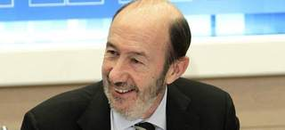
Las valoraciones de los dos grandes partidos nacionales no se han hecho esperar en la jornada después de las elecciones andaluzas y asturianas. Así, mientras el Partido Popular asegura que la "reflexión" y la "humildad" son ahora sus tareas principales, el PSOE ha destacado su condición de "partido fuerte" y cree que los resultados suponen para ellos un "balón de oxígeno".
El vicesecretario de Estudios y Programas del PP, Esteban González Pons, ha sido el primero de su partido en hablar este lunes a través de su cuenta de la red social Twitter. "Buen día a todos, después de una noche larga hoy empieza un día para la reflexión y la humildad", ha escrito el popular.
El PP ganó en Andalucía por primera vez en 30 años, pero los 50 escaños conseguidos están lejos de los 55 con los que podría gobernar. En cuanto a Asturias, la candidatura de Mercedes Fernández repite los resultados de hace ocho meses y se mantiene como tercera fuerza política en el Principado con 10 escaños.
Distancia con Rodríguez Zapatero
El vicesecretario de Organización del PP, Carlos Floriano, ha reconocido, por su parte, que el PP no va a gobernar en Andalucía, a pesar de haber sido la fuerza más votada. "No vamos a gobernar pero hemos ganado de una manera irreprochable", ha dicho.
Floriano ha recordado que "no hace mucho tiempo el PSOE ganaba por más de 20 puntos al PP" y que "aunque el voto para la izquierda sigue siendo mayoritario en Andalucía", ahora el PP se ha convertido "en el primer partido" de la Comunidad Autónoma. "No puede invadirnos la sensación de melancolía", ha apuntado.
Preguntado por el motivo de que el PP no haya conseguido la mayoría absoluta, Floriano ha apuntado a que el actual presidente de la Junta de Andalucía y candidato socialista, José Antonio Griñán, ha sabido distanciarse del expresidente del Gobierno José Luis Rodríguez Zapatero y del secretario general del PSOE, Alfredo Pérez Rubalcaba.
"Ha puesto tierra de por medio con Rubalcaba y Zapatero, y ese poner tierra de por medio ha hecho que haya votantes que hayan pensado que no había que seguir castigando al PSOE tan duramente como hasta ahora", ha explicado.
"Un balón de oxígeno"
Por su parte, el secretario general del PSOE, Alfredo Pérez Rubalcaba, ha dicho que se "ha demostrado" que el suyo "es un partido fuerte, con el que hay que siempre hay que contar y al que no se puede ignorar". Rubalcaba también ha explicado que muchos votantes han querido decir al PP que "por aquí no" y que, de este modo, empieza un nuevo "ciclo político".
Tras presidir la reunión de la Comisión Permanente de la Ejecutiva del PSOE, Rubalcaba ha explicado en rueda de prensa que tanto José Antonio Griñán en Andalucía como Javier Fernández en Asturias cuentan con todo el respaldo de la dirección federal para negociar la formación de gobiernos progresistas en esas comunidades.
"Hoy es un buen día para el PSOE; estamos satisfechos, cómo no, del resultado electoral", ha proclamado Rubalcaba, quien ha justificado buena parte de los resultados en las políticas que está llevando a cabo el Gobierno de Mariano Rajoy, que han sido cuestionadas por la ciudadanía, pero también en el trabajo realizado por los socialistas en esas dos autonomías.
A su entender, al PP "le ha ido mal, sobre todo en Andalucía", en las elecciones, porque los ciudadanos han sido conscientes de que está aprovechando la crisis económica para hacer "su particular ajuste de cuentas con el Estado del bienestar". Por eso, ha considerado que el PP debería reflexionar y "hacer un esfuerzo" por acercarse a los sindicatos y las posiciones que mantiene el PSOE en asuntos como la reforma laboral.
Rubalcaba ha añadido que al PP le ha "salido mal" ocultar los presupuestos generales de Estado hasta después del 25M y, además, eso ha dañado a la economía española, como lo demuestran, a su juicio, las declaraciones de distintos responsables comunitarios
"Un soplo de optimismo"
También ha hablado la vicesecretaria general del PSOE, Elena Valenciano, que cree que es evidente que los resultados de las elecciones son "un balón de oxígeno" y "un soplo de optimismo" para su partido, que "ha sufrido duras derrotas" y está trabajando "con rigor y seriedad".
En declaraciones a RNE, Valenciano ha valorado así el triunfo del PSOE en Asturias, donde no ha obtenido sin embargo mayoría absoluta, y Andalucía, donde pese a haber perdido las elecciones puede formar Gobierno si consigue el apoyo de Izquierda Unida.
Valenciano ha señalado que el PSOE "tiene todas las opciones" para seguir gobernando en Andalucía y que, en Asturias, defenderá su "derecho a gobernar" como partido más votado y "con muchísima diferencia con el siguiente", el FAC de Francisco Álvarez Cascos.
En ese sentido, ha apuntado la posibilidad de que el voto de la emigración dé un escaño más al PSOE lo que haría "más sencillo" las posibilidades de Javier Fernández, su candidato, para ostentar la Presidencia del Principado.
La vicesecretaria general del PSOE ha reiterado que las elecciones autonómicas son, ante todo, "el fracaso del PP" y del presidente del Gobierno, Mariano Rajoy, que había apostado por una mayoría absoluta en Andalucía y mejores resultados en Asturias.
A su juicio, Rajoy "se alió con la crisis para llegar al poder" y eso se ha vuelto en su contra a menos de cien días de llegar al Palacio de la Moncloa.
Respecto a las posibilidades que se abren ahora en Andalucía, Valenciano ha dicho que todo dependerá de las negociaciones que, a partir de hoy, se abran entre las dos formaciones políticas, de si IU "se suma al Gobierno" o "lo apoya desde fuera con acuerdos puntales que habrá que negociar y pactar".
Análisis en clave nacional
Sobre este posible pacto, el coordinador general de IULV-CA, Diego Valderas, ha descartado que en Andalucía pueda producirse un escenario similar al registrado en Extremadura, donde IU propició con su abstención la investidura del PP como fuerza más votada, porque "nosotros combatimos las políticas de derecha" y tendría "poca coherencia y sentido tratar de mezclar algo imposible, el agua y el aceite, pero eso no significa ningún cheque en blanco para nadie".
El lehendakari, Patxi López, también ha achacado los resultados a las políticas de Rajoy y a la "preocupación" por la reforma laboral, por lo que ha señalado que el PSOE ha demostrado que "sigue siendo imprescindible en estos tiempos de turbulencias".
López ha dicho estar "convencido" de que los resultados de los comicios pueden analizarse en "clave nacional" por la gestión de los 'populares' en el Ejecutivo central, al tiempo que ha subrayado que el PSOE ha demostrado que "no es ni mucho menos un partido derrotado".
2012-03-26T11:51:32Z
Iberia y el sindicato de pilotos no alcanzan un acuerdo con la mediación de Pimentel
Iberia y el sindicato de pilotos no alcanzan un acuerdo con la mediación de Pimentel
EFE
Pimentel presentó propuestas tanto para Iberia Express como para el convenio.
El Sepla convoca una asamblea para los días 27 y 29 de marzo.
En dicha reunión se espera que se retome el calendario de paros.
Los pilotos de Iberia representados por su sindicato (Sepla-Iberia) y la compañía no han alcanzado un acuerdo con las propuestas presentadas por el mediador designado por el Ministerio de Fomento, Manuel Pimentel, y el sindicato se plantea volver a hacer huelgas, han informado las partes negociadoras.Un portavoz del Sepla ha señalado que los pilotos van a llevar a cabo asambleas de carácter extraordinario los días 27 y 29 de marzo, para analizar la situación de la empresa y añadió que "la posibilidad de la convocatoria de nuevas huelgas está encima de la mesa".Esa decisión deberá ser tomada por los afiliados en esas reuniones y una vez que se analice la situación de la compañía tras el inicio de operaciones de la nueva aerolínea Iberia Express. Sobre las circunstancias que han motivado que no se llegase a un acuerdo con la mediación de Pimentel, el Sepla ha remitido al Ministerio de Fomento, que es a juicio de ese portavoz quien debe informar.El mediador ha presentado diversas propuestas a ambas partes, manteniendo reuniones conjuntas y por separado para presentar una propuesta que sea aceptada por Iberia y el colectivo de pilotos, tanto con la puesta en marcha de la nueva línea de bajo coste Iberia Express, como para la negociación del convenio colectivo. Fuentes de Iberia han indicado que se está a la espera de conocer el informe elaborado por el mediador, y confirmaron que no se ha llegado a ningún acuerdo, porque "no ha sido posible". No obstante desde Iberia se ha señalado que la empresa no ha abandonado en ningún momento la mesa de negociación, y que "con mediador o sin él" se debe seguir negociando el Convenio Colectivo.El conflicto radica en la creación de la nueva compañía de bajo coste que ha generado movilizaciones entre varios colectivos de los trabajadores de Iberia, principalmente entre los pilotos representados por su sindicato (Sepla-Iberia), que consideran ilegal su puesta en marcha "fuera de la matriz", al vulnerar su convenio colectivo. El Sepla Iberia ha convocado 12 jornadas de huelga en diciembre, enero y febrero, que han supuesto a la compañía unas pérdidas calculadas en unos 36 millones de euros, a razón de una media de 3 millones por cada día.
EFE
- Pimentel presentó propuestas tanto para Iberia Express como para el convenio.
- El Sepla convoca una asamblea para los días 27 y 29 de marzo.
- En dicha reunión se espera que se retome el calendario de paros.
Los pilotos de Iberia representados por su sindicato (Sepla-Iberia) y la compañía no han alcanzado un acuerdo con las propuestas presentadas por el mediador designado por el Ministerio de Fomento, Manuel Pimentel, y el sindicato se plantea volver a hacer huelgas, han informado las partes negociadoras.
Un portavoz del Sepla ha señalado que los pilotos van a llevar a cabo asambleas de carácter extraordinario los días 27 y 29 de marzo, para analizar la situación de la empresa y añadió que "la posibilidad de la convocatoria de nuevas huelgas está encima de la mesa".
Esa decisión deberá ser tomada por los afiliados en esas reuniones y una vez que se analice la situación de la compañía tras el inicio de operaciones de la nueva aerolínea Iberia Express. Sobre las circunstancias que han motivado que no se llegase a un acuerdo con la mediación de Pimentel, el Sepla ha remitido al Ministerio de Fomento, que es a juicio de ese portavoz quien debe informar.
El mediador ha presentado diversas propuestas a ambas partes, manteniendo reuniones conjuntas y por separado para presentar una propuesta que sea aceptada por Iberia y el colectivo de pilotos, tanto con la puesta en marcha de la nueva línea de bajo coste Iberia Express, como para la negociación del convenio colectivo.
Fuentes de Iberia han indicado que se está a la espera de conocer el informe elaborado por el mediador, y confirmaron que no se ha llegado a ningún acuerdo, porque "no ha sido posible". No obstante desde Iberia se ha señalado que la empresa no ha abandonado en ningún momento la mesa de negociación, y que "con mediador o sin él" se debe seguir negociando el Convenio Colectivo.
El conflicto radica en la creación de la nueva compañía de bajo coste que ha generado movilizaciones entre varios colectivos de los trabajadores de Iberia, principalmente entre los pilotos representados por su sindicato (Sepla-Iberia), que consideran ilegal su puesta en marcha "fuera de la matriz", al vulnerar su convenio colectivo. El Sepla Iberia ha convocado 12 jornadas de huelga en diciembre, enero y febrero, que han supuesto a la compañía unas pérdidas calculadas en unos 36 millones de euros, a razón de una media de 3 millones por cada día.
2012-03-26T07:37:54Z
Empleo sube de nuevo a YouTube el vídeo sobre la reforma laboral
Empleo sube de nuevo a YouTube el vídeo sobre la reforma laboral
EFE
El 21 de marzo, Empleo difundió un vídeo para defender la reforma laboral.
La Junta Electoral Central obligó al PP a retirarlo, al estimar una denuncia del PSOE que lo consideraba propaganda política, algo que vulneraba la ley electoral.
Tras las elecciones de Andalucía y Asturias, el vídeo se ha subido de nuevo.
El Ministerio de Empleo y Seguridad Social ha vuelto a subir al portal de Internet YouTube el vídeo sobre la reforma laboral que se vio obligado a retirar con motivo de las elecciones autonómicas en Andalucía y Asturias.El pasado 21 de marzo, Empleo difundió en YouTube el citado vídeo para defender la reforma laboral aprobada por el Gobierno con el argumento de que se trata de "una reforma para el empleo" y de que busca convertir el despido en el "último recurso" para las empresas.Un día después, la Junta Electoral Central (JEC) estimó la denuncia presentada por el PSOE contra el vídeo y obligó a retirarlo hasta después de los comicios andaluces y asturianos.Los socialistas recurrieron la difusión del vídeo del Ministerio de Empleo por considerar que se trataba de propaganda del Ejecutivo y vulneraba la ley electoral.Tanto el grupo del PSOE como IU registraron sendas preguntas parlamentarias para conocer, entre otras cuestiones, a cuánto había ascendido el coste del clip, que, según desveló el viernes la vicepresidenta del Gobierno, Soraya Sáenz de Santamaría, ascendió a 4.200 euros más IVA.
EFE
- El 21 de marzo, Empleo difundió un vídeo para defender la reforma laboral.
- La Junta Electoral Central obligó al PP a retirarlo, al estimar una denuncia del PSOE que lo consideraba propaganda política, algo que vulneraba la ley electoral.
- Tras las elecciones de Andalucía y Asturias, el vídeo se ha subido de nuevo.
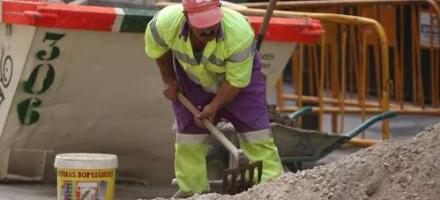
El Ministerio de Empleo y Seguridad Social ha vuelto a subir al portal de Internet YouTube el vídeo sobre la reforma laboral que se vio obligado a retirar con motivo de las elecciones autonómicas en Andalucía y Asturias.
El pasado 21 de marzo, Empleo difundió en YouTube el citado vídeo para defender la reforma laboral aprobada por el Gobierno con el argumento de que se trata de "una reforma para el empleo" y de que busca convertir el despido en el "último recurso" para las empresas.
Un día después, la Junta Electoral Central (JEC) estimó la denuncia presentada por el PSOE contra el vídeo y obligó a retirarlo hasta después de los comicios andaluces y asturianos.
Los socialistas recurrieron la difusión del vídeo del Ministerio de Empleo por considerar que se trataba de propaganda del Ejecutivo y vulneraba la ley electoral.
Tanto el grupo del PSOE como IU registraron sendas preguntas parlamentarias para conocer, entre otras cuestiones, a cuánto había ascendido el coste del clip, que, según desveló el viernes la vicepresidenta del Gobierno, Soraya Sáenz de Santamaría, ascendió a 4.200 euros más IVA.
2012-03-25T23:33:38Z
Izquierda Unida duplica sus escaños en Andalucía y crece 7.154 votos en Asturias
Izquierda Unida duplica sus escaños en Andalucía y crece 7.154 votos en Asturias
20MINUTOS.ES / VIDEO: ATLAS
La formación ha vuelto a dar la sorpresa en estas elecciones autonómicas.
En los comicios generales del 20 de noviembre de 2011 subió nueve escaños y recuperó el grupo parlamentario propio en el Congreso de los Diputados.
Sus resultados en las locales del año pasado también fueron positivos.
Todos los resultados en nuestro mapa electoral / Especial elecciones 2012.
Los resultados de Izquierda Unida en las elecciones autonómicas de Andalucía y Asturias han supuesto un nuevo espaldarazo a la formación, que desde el año 2007 no ha hecho más que sumar apoyos en comicios municipales, generales y regionales. "La ola azul se ha estrellado en Despeñaperros", ha dicho el coordinador federal Cayo Lara sin ocultar su satisfacción por la contención del voto popular.Los datos hablan por sí solos: en Andalucía, IULV-CA ha doblado el número de diputados respecto a 2008, de 6 a 12, y ha aumentado en 119.883 los votos, hasta llegar a los 437.445, un 11,34% del total. En Asturias, es la única fuerza que tenía representación en el Parlamento que no pierde apoyos. Ha obtenido 7.124 votos más, alcanzando los 68.827, y un escaño adicional, quedándose finalmente con cinco diputados regionales.En Andalucía será clave para que la izquierda siga en el poder y "utilizará sus escaños para que no gobierne Arenas en Andalucía", ha avisado Lara; en el Principado, y si las carambolas post electorales -y el voto de residentes en el exterior- así lo determinan, podría hasta formar parte de un Ejecutivo junto a PSOE y UPyD. El barómetro CIS ya apuntó maneras para Izquierda Unida a principios de este mes, aunque se quedó corto en escaños en Andalucía (le daba entre 9 y 10) y se pasó un poco en Asturias; le daba 7, los que sumó el partido durante buena parte del recuento de este domingo hasta que, poco a poco, comenzó a perderlos en beneficio del PSOE y de UPyD.Si analizamos algunas citas electorales anteriores, la progresión de la formación también es clara. En cuanto a elecciones locales, en 2007 Izquieda Unida obtuvo 2.033 concejales, mientras que en 2011 alcanzó los 2.248. Si hablamos de elecciones generales, el salto fue también cualtitativo: el 20 de noviembre de 2011 votaron a IU 1.680.810 personas; en la anterior convocatoria electoral, 963.040.Estas cifras son más visibles si las traducimos al número de diputados en el Congreso: pasaron de 2 en 2008 a 11 en 2011, cinco veces más, lo que supuso que recuperaran el ansiado grupo parlamentario propio.El candidato de Izquierda Unida a la Presidencia de Asturias, Jesús Iglesias, ha asegurado que los resultados de este domingo les dan "más fuerza y confianza". "Hemos logrado derrotar al bipartidismo", exclamó, desde Sevilla, el coordinador general de IULV-CA, Diego Valderas.
20MINUTOS.ES / VIDEO: ATLAS
- La formación ha vuelto a dar la sorpresa en estas elecciones autonómicas.
- En los comicios generales del 20 de noviembre de 2011 subió nueve escaños y recuperó el grupo parlamentario propio en el Congreso de los Diputados.
- Sus resultados en las locales del año pasado también fueron positivos.
- Todos los resultados en nuestro mapa electoral / Especial elecciones 2012.
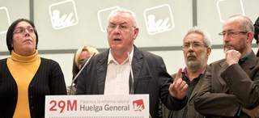
Los resultados de Izquierda Unida en las elecciones autonómicas de Andalucía y Asturias han supuesto un nuevo espaldarazo a la formación, que desde el año 2007 no ha hecho más que sumar apoyos en comicios municipales, generales y regionales.
"La ola azul se ha estrellado en Despeñaperros", ha dicho el coordinador federal Cayo Lara sin ocultar su satisfacción por la contención del voto popular.
Los datos hablan por sí solos: en Andalucía, IULV-CA ha doblado el número de diputados respecto a 2008, de 6 a 12, y ha aumentado en 119.883 los votos, hasta llegar a los 437.445, un 11,34% del total. En Asturias, es la única fuerza que tenía representación en el Parlamento que no pierde apoyos. Ha obtenido 7.124 votos más, alcanzando los 68.827, y un escaño adicional, quedándose finalmente con cinco diputados regionales.
En Andalucía será clave para que la izquierda siga en el poder y "utilizará sus escaños para que no gobierne Arenas en Andalucía", ha avisado Lara; en el Principado, y si las carambolas post electorales -y el voto de residentes en el exterior- así lo determinan, podría hasta formar parte de un Ejecutivo junto a PSOE y UPyD.
El barómetro CIS ya apuntó maneras para Izquierda Unida a principios de este mes, aunque se quedó corto en escaños en Andalucía (le daba entre 9 y 10) y se pasó un poco en Asturias; le daba 7, los que sumó el partido durante buena parte del recuento de este domingo hasta que, poco a poco, comenzó a perderlos en beneficio del PSOE y de UPyD.
Si analizamos algunas citas electorales anteriores, la progresión de la formación también es clara. En cuanto a elecciones locales, en 2007 Izquieda Unida obtuvo 2.033 concejales, mientras que en 2011 alcanzó los 2.248. Si hablamos de elecciones generales, el salto fue también cualtitativo: el 20 de noviembre de 2011 votaron a IU 1.680.810 personas; en la anterior convocatoria electoral, 963.040.
Estas cifras son más visibles si las traducimos al número de diputados en el Congreso: pasaron de 2 en 2008 a 11 en 2011, cinco veces más, lo que supuso que recuperaran el ansiado grupo parlamentario propio.
El candidato de Izquierda Unida a la Presidencia de Asturias, Jesús Iglesias, ha asegurado que los resultados de este domingo les dan "más fuerza y confianza". "Hemos logrado derrotar al bipartidismo", exclamó, desde Sevilla, el coordinador general de IULV-CA, Diego Valderas.
2012-03-25T22:45:19Z
El PSOE gana las elecciones en Asturias, pero Foro y el Partido Popular suman mayoría absoluta
El PSOE gana las elecciones en Asturias, pero Foro y el Partido Popular suman mayoría absoluta
20MINUTOS.ES/AGENCIAS
El PSOE obtiene 16 escaños y el 32,01% de los votos; Foro Asturias, 13 escaños; PP, 10; IU, 5; y UPyD entra en el parlamento por primera vez con un diputado.
Cascos y 'Cherines' tienden la mano al "pacto" ante la victoria del PSOE.
Todos los resultados en nuestro mapa electoral / Especial elecciones 2012.
El PSOE ha ganado las elecciones autonómicas de Asturias, aunque tendrá que esperar para saber si gobernará o no el Principado y cómo, ya que no ha obtenido una mayoría suficiente, algo con lo que sí cuenta la suma de los escaños de Foro y PP. El partido liderado por Francisco Álvarez-Cascos ha logrado este domingo 123.979 votos y 13 escaños y los socialistas de Javier Fernández, 159.811 votos y 16 escaños. El PSOE, por tanto, es el vencedor numérico de los comicios. Por su parte, el PP, con Mercedes Fernández al frente, ha obtenido 107.476 votos y 10 escaños, mientras que Izquierda Unida ha sumado 68.827 votos y 5 escaños. Una segunda lectura de los resultados indica que Foro Asturias ha perdido tres escaños y 54.000 votos respecto a las elecciones de hace diez meses, mientras que el PSOE gana un escaño -aunque pierde casi 20.000 votos- y el PP se mantiene igual en escaños, pero pierde 12.000 votos en total. IU, por su parte, crece también en 7.000 votos y un escaño y UPyD ha obtenido, por primera vez, un diputado y 18.739 votos. La mayoría parlamentaria está en 23 diputados de un total de 45.El PP es el único partido que renovó su lista respecto a la convocatoria anterior, sustituyendo como cabeza de la misma a Isabel Pérez-Espinosa por Mercedes Fernández, Cherines, defensora de Cascos cuando aún estaba la formación.Álvarez-Cascos tiende la manoLa popular Mercedes Fernández aseguró tras conocer los resultados que, a tenor de los datos de participación, "Asturias no necesitaba una convocatoria electoral", algo que repitió después durante su comparecencia la secretaria general del PP, Dolores de Cospedal. Asimismo, la candidata dijo que los datos "no son satisfactorios" y reveló que había felicitado al candidato del PSOE por su victoria.El presidente de Foro, Francisco Álvarez-Cascos, felicitó también al PSOE y subrayó que su partido se asienta como segunda fuerza y que serán imprescindibles el diálogo, los acuerdos, las renuncias parciales, aceptar tesis ajenas, la colaboración y el respeto; habrá empeño en dialogar, explicó. El cabeza de lista del partido ganador, Javier Fernández, se mostró, por su parte, dispuesto a "buscar una sintonía para tener un gobierno en el menor tiempo posible". No lo tiene fácil porque él mismo ya dejó claro que no pactaría con la derecha, y de hacerlo con Izquierda Unida, no llegaría a la mayoría necesaria para hacerse con el gobierno del Principado. Queda aún pendiente el voto de los asturianos residentes en el extranjero, que quizá podrían darle un escaño más al PSOE, informa Carmen Mateo.En la primera ocasión en la que Asturias celebra unas elecciones autonómicas anticipadas la participación se ha reducido al 55,92%, la más baja de la historia en los ocho comicios regionales celebrados en el Principado desde 1983, y que desciende en más de once puntos en relación con la convocatoria de mayo de 2011. La abstención ha sido del 44,08%.Todos los grandes, menos OviedoEl PSOE ha sido el partido más votado en los grandes municipios asturianos, como es el caso de Gijón, Avilés, Siero, Langreo y Mieres, mientras que el PP lo ha sido en Oviedo. De los 78 municipios asturianos, los socialistas han sido los más votados en más de 60, frente a los 53 en los que consiguió serlo en las elecciones de marzo. De los grandes municipios asturianos, el PSOE ha conseguido una victoria por un mayor margen en Avilés, ciudad que en los últimos meses ha visto cómo era objeto de disputas por la gestión del Centro Internacional Óscar Niemeyer. Los socialistas han conseguido en Avilés el 33,4% de los votos, tres puntos mas que en mayo, mientras que Foro ha conseguido el 21,1%, que ha perdido siete puntos, y el PP ha obtenido el 21%, casi dos puntos más. En el caso de Gijón, donde gobierna el ayuntamiento Foro Asturias con el apoyo puntual de los populares, el PSOE también ha recuperado terreno al conseguir el 32,08%, dos puntos más que en mayo. Foro ha conseguido el 29% de los sufragios del municipio, casi cuatro puntos menos, y el PP se ha mantenido como la tercera fuerza con el 16%, apenas medio punto más. En la capital asturiana, el PP se mantiene como la formación más votada al recoger en todo el municipio el 27,9% de los sufragios, cuatro puntos más, mientras que el 25,8% ha sido para el PSOE, que también gana casi medio punto, mientras que la formación de Francisco Álvarez-Cascos ha perdido casi ocho puntos y se ha quedado con el 25%.Una legislatura en minoríaEn las elecciones de mayo de 2011, Foro Asturias obtuvo 16 escaños; el PSOE, 15; el PP, 10; e IU 4 escaños. En cuanto a votos, fueron los socialistas con 179.619 los que más apoyos directos obtuvieron; Foro se quedó con 178.031, pero pudo gobernar en solitario con Álvarez-Cascos. Durante la legislatura que ahora concluye, la más corta de la historia de Asturias como comunidad autónoma, Álvarez-Cascos gobernó sin alcanzar acuerdos con el resto de fuerzas políticas, lo que determinó su decisión de anticipar los comicios al ver rechazado su proyecto de presupuestos para 2012. Ni siquiera alcanzó consensos con la formación de la que su líder fue secretario general durante diez años y que, a comienzos de 2011, decidió abandonar el PP para ponerse al frente de una nueva formación política. Tras estas elecciones, la nueva Junta General del Principado contará con representantes de cinco formaciones políticas, una circunstancia que no se repetía desde la legislatura comprendida entre 1991 y 1995.La Junta, además, tendrá con 22 diputados que no formaron parte del Parlamento asturiano en la anterior legislatura, 19 serán mujeres y los otros 16 hombres. De los 16 escaños del PSOE, tendrán nuevo inquilino nueve de ellos. En el PP la renovación será aun mayor, pues conserva los diez escaños que tenía pero con siete caras nuevas. En Foro, que desciende de dieciséis a trece diputados, cuatro son novedades. Y habrá un nuevo diputado de UPyD, informa Carmen Mateo.
20MINUTOS.ES/AGENCIAS
- El PSOE obtiene 16 escaños y el 32,01% de los votos; Foro Asturias, 13 escaños; PP, 10; IU, 5; y UPyD entra en el parlamento por primera vez con un diputado.
- Cascos y 'Cherines' tienden la mano al "pacto" ante la victoria del PSOE.
- Todos los resultados en nuestro mapa electoral / Especial elecciones 2012.
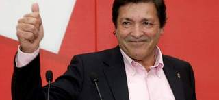
El PSOE ha ganado las elecciones autonómicas de Asturias, aunque tendrá que esperar para saber si gobernará o no el Principado y cómo, ya que no ha obtenido una mayoría suficiente, algo con lo que sí cuenta la suma de los escaños de Foro y PP.
El partido liderado por Francisco Álvarez-Cascos ha logrado este domingo 123.979 votos y 13 escaños y los socialistas de Javier Fernández, 159.811 votos y 16 escaños. El PSOE, por tanto, es el vencedor numérico de los comicios. Por su parte, el PP, con Mercedes Fernández al frente, ha obtenido 107.476 votos y 10 escaños, mientras que Izquierda Unida ha sumado 68.827 votos y 5 escaños.
Una segunda lectura de los resultados indica que Foro Asturias ha perdido tres escaños y 54.000 votos respecto a las elecciones de hace diez meses, mientras que el PSOE gana un escaño -aunque pierde casi 20.000 votos- y el PP se mantiene igual en escaños, pero pierde 12.000 votos en total. IU, por su parte, crece también en 7.000 votos y un escaño y UPyD ha obtenido, por primera vez, un diputado y 18.739 votos. La mayoría parlamentaria está en 23 diputados de un total de 45.
El PP es el único partido que renovó su lista respecto a la convocatoria anterior, sustituyendo como cabeza de la misma a Isabel Pérez-Espinosa por Mercedes Fernández, Cherines, defensora de Cascos cuando aún estaba la formación.
Álvarez-Cascos tiende la mano
La popular Mercedes Fernández aseguró tras conocer los resultados que, a tenor de los datos de participación, "Asturias no necesitaba una convocatoria electoral", algo que repitió después durante su comparecencia la secretaria general del PP, Dolores de Cospedal. Asimismo, la candidata dijo que los datos "no son satisfactorios" y reveló que había felicitado al candidato del PSOE por su victoria.
El presidente de Foro, Francisco Álvarez-Cascos, felicitó también al PSOE y subrayó que su partido se asienta como segunda fuerza y que serán imprescindibles el diálogo, los acuerdos, las renuncias parciales, aceptar tesis ajenas, la colaboración y el respeto; habrá empeño en dialogar, explicó.
El cabeza de lista del partido ganador, Javier Fernández, se mostró, por su parte, dispuesto a "buscar una sintonía para tener un gobierno en el menor tiempo posible".
No lo tiene fácil porque él mismo ya dejó claro que no pactaría con la derecha, y de hacerlo con Izquierda Unida, no llegaría a la mayoría necesaria para hacerse con el gobierno del Principado. Queda aún pendiente el voto de los asturianos residentes en el extranjero, que quizá podrían darle un escaño más al PSOE, informa Carmen Mateo.
En la primera ocasión en la que Asturias celebra unas elecciones autonómicas anticipadas la participación se ha reducido al 55,92%, la más baja de la historia en los ocho comicios regionales celebrados en el Principado desde 1983, y que desciende en más de once puntos en relación con la convocatoria de mayo de 2011. La abstención ha sido del 44,08%.
Todos los grandes, menos Oviedo
El PSOE ha sido el partido más votado en los grandes municipios asturianos, como es el caso de Gijón, Avilés, Siero, Langreo y Mieres, mientras que el PP lo ha sido en Oviedo. De los 78 municipios asturianos, los socialistas han sido los más votados en más de 60, frente a los 53 en los que consiguió serlo en las elecciones de marzo.
De los grandes municipios asturianos, el PSOE ha conseguido una victoria por un mayor margen en Avilés, ciudad que en los últimos meses ha visto cómo era objeto de disputas por la gestión del Centro Internacional Óscar Niemeyer. Los socialistas han conseguido en Avilés el 33,4% de los votos, tres puntos mas que en mayo, mientras que Foro ha conseguido el 21,1%, que ha perdido siete puntos, y el PP ha obtenido el 21%, casi dos puntos más.
En el caso de Gijón, donde gobierna el ayuntamiento Foro Asturias con el apoyo puntual de los populares, el PSOE también ha recuperado terreno al conseguir el 32,08%, dos puntos más que en mayo. Foro ha conseguido el 29% de los sufragios del municipio, casi cuatro puntos menos, y el PP se ha mantenido como la tercera fuerza con el 16%, apenas medio punto más.
En la capital asturiana, el PP se mantiene como la formación más votada al recoger en todo el municipio el 27,9% de los sufragios, cuatro puntos más, mientras que el 25,8% ha sido para el PSOE, que también gana casi medio punto, mientras que la formación de Francisco Álvarez-Cascos ha perdido casi ocho puntos y se ha quedado con el 25%.
Una legislatura en minoría
En las elecciones de mayo de 2011, Foro Asturias obtuvo 16 escaños; el PSOE, 15; el PP, 10; e IU 4 escaños. En cuanto a votos, fueron los socialistas con 179.619 los que más apoyos directos obtuvieron; Foro se quedó con 178.031, pero pudo gobernar en solitario con Álvarez-Cascos.
Durante la legislatura que ahora concluye, la más corta de la historia de Asturias como comunidad autónoma, Álvarez-Cascos gobernó sin alcanzar acuerdos con el resto de fuerzas políticas, lo que determinó su decisión de anticipar los comicios al ver rechazado su proyecto de presupuestos para 2012.
Ni siquiera alcanzó consensos con la formación de la que su líder fue secretario general durante diez años y que, a comienzos de 2011, decidió abandonar el PP para ponerse al frente de una nueva formación política. Tras estas elecciones, la nueva Junta General del Principado contará con representantes de cinco formaciones políticas, una circunstancia que no se repetía desde la legislatura comprendida entre 1991 y 1995.
La Junta, además, tendrá con 22 diputados que no formaron parte del Parlamento asturiano en la anterior legislatura, 19 serán mujeres y los otros 16 hombres. De los 16 escaños del PSOE, tendrán nuevo inquilino nueve de ellos. En el PP la renovación será aun mayor, pues conserva los diez escaños que tenía pero con siete caras nuevas. En Foro, que desciende de dieciséis a trece diputados, cuatro son novedades. Y habrá un nuevo diputado de UPyD, informa Carmen Mateo.
2012-03-25T22:36:39Z
La paradoja del 25-M: los ganadores podrían no gobernar ni en Andalucía ni en Asturias
La paradoja del 25-M: los ganadores podrían no gobernar ni en Andalucía ni en Asturias
A. L. / 20MINUTOS.ES
ANDALUCÍA: Primera victoria del PP en el feudo socialista, pero se queda a 5 escaños de la mayoría absoluta.
ASTURIAS: El PSOE gana en Asturias, pero FAC y PP sumarían mayoría absoluta.
Javier Arenas promete trabajar "con humildad" como la fuerza mayoritaria.
Griñán: "El PSOE ha recuperado una buena parte de la confianza perdida".
IU: "Usaremos nuestros votos para que no gobierne Javier Arenas".
Las claves más importantes de las elecciones andaluzas y asturianas.
BLOG de Arsenio Escolar: "El 25-M en siete claves".
El Partido Popular ha ganado por primera vez en su historia las elecciones en Andalucía pero su victoria se ha quedado corta y no podrá gobernar el feudo socialista. En Asturias, el PSOE ha sido la formación más votada en estas elecciones adelantadas, aunque los votos del centro derecha -FAC y PP- sumarían una mayoría absoluta.De las elecciones del 25-M se desprende que -paradojicamente- podrían no gobernar las formaciones ganadoras. Además, supone el primer varapalo al PP por el desgaste de las medidas de ajuste económico llevadas a cabo desde que ganó las Elecciones Generales, el 20-N.El ascenso de Izquierda Unida en ambas comunidades autónomas -especialmente reseñable en Andalucía donde han duplicado los escaños y tienen la llave del Gobierno- se interpreta asimismo como un castigo del electorado a los recortes de los primeros cien días del Gobierno de Mariano Rajoy. Y otra de las claves de la jornada es la baja participación: 10,44 puntos menos en Andalucía y hasta 10,77 puntos menos en Asturias.Javier Arenas, tampoco a la cuartaAndalucía seguirá gobernada por los socialistas gracias a Izquierda Unida, que ha prometido que evitará un gobierno del PP que ha obtenido 50 escaños (+3 frente a 2008). Los socialistas tienen 47 (-9) e Izquierda Unida 12 (+6). Juntos, suman 59 -cuatro por encima de la mayoría absoluta (55).En cuanto a sufragios, El PP ha perdido cerca 168.000 votos en Andalucía respecto a los comicios de 2008, y solo saca al PSOE cerca de 43.000 votos. Los socialistas han perdido casi 659.837 votos respecto a las últimas autonómicas, e IU ha sumado en torno a 119.000 más sobre 2008.Tres partidos han estado cerca de acceder al Parlamento andaluz. El Partido Andalucista (PA), eterno aspirante, no levanta cabeza. Las malas noticias llegaron con las municipales de mayo. Ahora, vuelven a repetirse. En 2008 consiguieron más de 124.200 votos. Este 25 de marzo no alcanzaron ni los 100.000, un 2,5%. Muchos esperaban que la sorpresa llegase con UPyD. La formación no ha logrado ningún diputado, al no alcanzar el cupo exigido por ley, aunque ha obtenido más de 128.000 votos (más del 3,3%), casi diez veces más que hace cuatro años. Por último, Equo no ha logrado su objetivo y, además, no ha llegado ni al 1% de las papeletas. Solo han confiado en su programa poco más de 20.000 andaluces."La ola azul se ha parado en Despeñaperros", ha dicho Cayo Lara (IU) Tras conocerse el resultado definitivo, Javier Arenas -que tampoco en su cuarto intento consigue gobernar su Comunidad Autónoma- prometía actuar con "humildad" y daba las gracias a los andaluces por el "hecho histórico" de una victoria del PP en Andalucía. Arenas agregaba que el PP se va a comportar "como la primera fuerza política de Andalucía".José Antonio Griñán, visiblemente feliz ante las perspectivas de mantener el Gobierno pese a haber perdido las elecciones lastrado por el escándalo de los ERE, ha resaltado que el PSOE "ha recuperado una buena parte de la confianza perdida en las Generales", dando "la vuelta a las encuestas". Su formación, ha asegurado, "apuesta por la estabilidad y el diálogo para que Andalucía salga de la crisis preservando los derechos de los andaluces y las andaluzas".Minutos después, Diego Valderas, líder andaluz de IU y clave del futuro Gobierno, sugería el apoyo de su partido a un gobierno andaluz de izquierdas. "Las urnas nos han dicho que la ciudadanía no quiere que las políticas de derechas aniden en nuestra comunidad; nos han dado la oportunidad al PSOE y a IU de hacer un giro a la izquierda", ha reconocido. "La ola azul se ha parado en Despeñaperros", apuntaba Cayo Lara desde Madrid.El Gobierno de Asturias, en el aireEn Asturias, Francisco Álvarez-Cascos -que había convocado elecciones anticipadas por una difícil gobernabilidad en solitario tras ganar las elecciones hace diez meses con un partido fundado en clara ruptura con el PP- recibía un varapalo perdiendo tres escaños y más de 54.052 votos. El FAC suma 123.770 votos y 13 escaños y los socialistas de Javier Fernández, 159.697 votos y 16 escaños. Por su parte, el PP, con Mercedes Fernández al frente, obtiene 107.449 votos y 10 escaños, mientras que Izquierda Unida suma 68.789 votos y 5 escaños. La formación de Rosa Díez, UPyD, que al principio del escrutinio parecía que podía ser la clave asturiana, ha conseguido entrar en el Parlamento asturiano con un escaño. Como resumen, el PSOE ha ganado las elecciones, pero la gobernabilidad queda en el aire y pendiente de los pactos. Foro y PP podrían sumar mayoría absoluta (23 escaños) contra los 21 de PSOE con IU. Sin embargo, el acuerdo de centro derecha parece difícil, dado que en estos últimos diez meses no han logrado ponerse de acuerdo ni para aprobar los presupuestos.La candidata del PP, Mercedes Fernández, ha dicho que los resultados evidencian "una fragmentación en el mapa político asturiano" y "la victoria del centro derecha en Asturias". Fernández ha resaltado, sin embargo, que los asturianos no necesitaban ahora unas elecciones en Asturias.El presidente de Foro, Francisco Álvarez-Cascos, ha felicitado al PSOE y ha subrayado que su partido se asienta como segunda fuerza y que serán imprescindibles el diálogo, los acuerdos, las renuncias parciales, aceptar tesis ajenas, la colaboración y el respeto; "habrá empeño" en dialogar, ha explicado.El cabeza de lista del partido ganador, Javier Fernández, se mostró, por su parte, dispuesto a "buscar una sintonía para tener un gobierno en el menor tiempo posible". Pero solo obtendría mayoría absoluta si el voto del exterior le da un nuevo escaño, y consigue aunar los de UPyD e IU.
A. L. / 20MINUTOS.ES
-
ANDALUCÍA: Primera victoria del PP en el feudo socialista, pero se queda a 5 escaños de la mayoría absoluta.
-
ASTURIAS: El PSOE gana en Asturias, pero FAC y PP sumarían mayoría absoluta.
- Javier Arenas promete trabajar "con humildad" como la fuerza mayoritaria.
- Griñán: "El PSOE ha recuperado una buena parte de la confianza perdida".
- IU: "Usaremos nuestros votos para que no gobierne Javier Arenas".
- Las claves más importantes de las elecciones andaluzas y asturianas.
- BLOG de Arsenio Escolar: "El 25-M en siete claves".

El Partido Popular ha ganado por primera vez en su historia las elecciones en Andalucía pero su victoria se ha quedado corta y no podrá gobernar el feudo socialista. En Asturias, el PSOE ha sido la formación más votada en estas elecciones adelantadas, aunque los votos del centro derecha -FAC y PP- sumarían una mayoría absoluta.
De las elecciones del 25-M se desprende que -paradojicamente- podrían no gobernar las formaciones ganadoras. Además, supone el primer varapalo al PP por el desgaste de las medidas de ajuste económico llevadas a cabo desde que ganó las Elecciones Generales, el 20-N.
El ascenso de Izquierda Unida en ambas comunidades autónomas -especialmente reseñable en Andalucía donde han duplicado los escaños y tienen la llave del Gobierno- se interpreta asimismo como un castigo del electorado a los recortes de los primeros cien días del Gobierno de Mariano Rajoy. Y otra de las claves de la jornada es la baja participación: 10,44 puntos menos en Andalucía y hasta 10,77 puntos menos en Asturias.
Javier Arenas, tampoco a la cuarta
Andalucía seguirá gobernada por los socialistas gracias a Izquierda Unida, que ha prometido que evitará un gobierno del PP que ha obtenido 50 escaños (+3 frente a 2008). Los socialistas tienen 47 (-9) e Izquierda Unida 12 (+6). Juntos, suman 59 -cuatro por encima de la mayoría absoluta (55).
En cuanto a sufragios, El PP ha perdido cerca 168.000 votos en Andalucía respecto a los comicios de 2008, y solo saca al PSOE cerca de 43.000 votos. Los socialistas han perdido casi 659.837 votos respecto a las últimas autonómicas, e IU ha sumado en torno a 119.000 más sobre 2008.
Tres partidos han estado cerca de acceder al Parlamento andaluz. El Partido Andalucista (PA), eterno aspirante, no levanta cabeza. Las malas noticias llegaron con las municipales de mayo. Ahora, vuelven a repetirse. En 2008 consiguieron más de 124.200 votos. Este 25 de marzo no alcanzaron ni los 100.000, un 2,5%. Muchos esperaban que la sorpresa llegase con UPyD. La formación no ha logrado ningún diputado, al no alcanzar el cupo exigido por ley, aunque ha obtenido más de 128.000 votos (más del 3,3%), casi diez veces más que hace cuatro años. Por último, Equo no ha logrado su objetivo y, además, no ha llegado ni al 1% de las papeletas. Solo han confiado en su programa poco más de 20.000 andaluces.
"La ola azul se ha parado en Despeñaperros", ha dicho Cayo Lara (IU) Tras conocerse el resultado definitivo, Javier Arenas -que tampoco en su cuarto intento consigue gobernar su Comunidad Autónoma- prometía actuar con "humildad" y daba las gracias a los andaluces por el "hecho histórico" de una victoria del PP en Andalucía. Arenas agregaba que el PP se va a comportar "como la primera fuerza política de Andalucía".
José Antonio Griñán, visiblemente feliz ante las perspectivas de mantener el Gobierno pese a haber perdido las elecciones lastrado por el escándalo de los ERE, ha resaltado que el PSOE "ha recuperado una buena parte de la confianza perdida en las Generales", dando "la vuelta a las encuestas". Su formación, ha asegurado, "apuesta por la estabilidad y el diálogo para que Andalucía salga de la crisis preservando los derechos de los andaluces y las andaluzas".
Minutos después, Diego Valderas, líder andaluz de IU y clave del futuro Gobierno, sugería el apoyo de su partido a un gobierno andaluz de izquierdas. "Las urnas nos han dicho que la ciudadanía no quiere que las políticas de derechas aniden en nuestra comunidad; nos han dado la oportunidad al PSOE y a IU de hacer un giro a la izquierda", ha reconocido. "La ola azul se ha parado en Despeñaperros", apuntaba Cayo Lara desde Madrid.
El Gobierno de Asturias, en el aire
En Asturias, Francisco Álvarez-Cascos -que había convocado elecciones anticipadas por una difícil gobernabilidad en solitario tras ganar las elecciones hace diez meses con un partido fundado en clara ruptura con el PP- recibía un varapalo perdiendo tres escaños y más de 54.052 votos.
El FAC suma 123.770 votos y 13 escaños y los socialistas de Javier Fernández, 159.697 votos y 16 escaños. Por su parte, el PP, con Mercedes Fernández al frente, obtiene 107.449 votos y 10 escaños, mientras que Izquierda Unida suma 68.789 votos y 5 escaños. La formación de Rosa Díez, UPyD, que al principio del escrutinio parecía que podía ser la clave asturiana, ha conseguido entrar en el Parlamento asturiano con un escaño.
Como resumen, el PSOE ha ganado las elecciones, pero la gobernabilidad queda en el aire y pendiente de los pactos. Foro y PP podrían sumar mayoría absoluta (23 escaños) contra los 21 de PSOE con IU. Sin embargo, el acuerdo de centro derecha parece difícil, dado que en estos últimos diez meses no han logrado ponerse de acuerdo ni para aprobar los presupuestos.
La candidata del PP, Mercedes Fernández, ha dicho que los resultados evidencian "una fragmentación en el mapa político asturiano" y "la victoria del centro derecha en Asturias". Fernández ha resaltado, sin embargo, que los asturianos no necesitaban ahora unas elecciones en Asturias.
El presidente de Foro, Francisco Álvarez-Cascos, ha felicitado al PSOE y ha subrayado que su partido se asienta como segunda fuerza y que serán imprescindibles el diálogo, los acuerdos, las renuncias parciales, aceptar tesis ajenas, la colaboración y el respeto; "habrá empeño" en dialogar, ha explicado.
El cabeza de lista del partido ganador, Javier Fernández, se mostró, por su parte, dispuesto a "buscar una sintonía para tener un gobierno en el menor tiempo posible". Pero solo obtendría mayoría absoluta si el voto del exterior le da un nuevo escaño, y consigue aunar los de UPyD e IU.
2012-03-27T09:16:45Z
El ministro de Industria anuncia que el recibo de la luz subirá en abril entre un 5 y un 7%
El ministro de Industria anuncia que el recibo de la luz subirá en abril entre un 5 y un 7%
AGENCIAS
Suben la luz para cumplir un auto del Supremo que obliga a repercutir en la tarifa el haber superado el límite anual de generación de déficit de tarifa.
Los consumidores no serán los únicos que soportarán su cumplimiento, también repercutirá en las operadoras y en las cuentas públicas: si no, subiría un 40%.
Anuncia un recorte adicional de los presupuestos para su ministerio, que tendrá un ajuste del 30% respecto al anterior ejercicio.
¿Cómo funcionan las subastas de luz? | ¿A quiénes les sube la luz?
El ministro de Industria, Energía y Turismo, José Manuel Soria, anunció este martes que la tarifa eléctrica de último recurso (TUR), a la que están acogida más de 20 millones de hogares y pymes, subirá el próximo 1 de abril entre el 5 y el 7 %. En declaraciones a Antena 3, Soria aseguró que el Gobierno debe subir la luz para dar cumplimiento a un auto del Tribunal Supremo que obliga a repercutir en la tarifa eléctrica o a las empresas el haber superado el límite anual de generación de déficit de tarifa, fijado en 1.500 millones de euros. El ministro aseguró que los consumidores no serán los únicos que soportarán el cumplimiento del citado auto, sino que este se repartirá también con los operadores del sector eléctricoy con las cuentas públicas, ya que, de lo contrario, habría que subir la tarifa un 40%. Algo que ha descartado, porque los consumidores "no pueden soportar toda la carga del desajuste que hay entre los ingresos y los costes del sistema eléctrico"."Yo creo que se puede pensar que vamos a estar en el entorno de un 5% a un 7%", ha anunciado Soria, que ha confirmado además que este viernes llevará al Consejo de Ministros medidas para reducir el déficit de tarifa.La subida del recibo de la luz en abril se producirá después de que la última subasta entre comercializadores de último recurso para fijar el término de la energía dentro de la tarifa de luz se cerrara con bajadas del 7,1%.Este descenso daba margen al Gobierno para aplicar una subida en parecida proporción en abril de la otra parte del recibo, la correspondiente a los costes regulados de la actividad eléctrica, o peajes.El ministro también ha adelantado que, en las decisiones que se anuncien el viernes sobre el déficit de tarifa, "las eléctricas tendrían que tener otro tipo de medidas que van en la estructura de los costes". "No todo puede ir a subir los ingresos" a través de la tarifa eléctrica, afirmó Soria, sino que "una parte" de las medidas deben ir destinadas a "subir los ingresos y otra a reducir los costes".Recorte adicional para IndustriaPor otro lado, el ministro anunció que los Presupuestos Generales del Estado (PGE) de 2012 incluirán un recorte adicional de entre 700 y 800 millones de euros en las partidas correspondientes al Ministerio de Industria, Energía y Turismo.Este importe, sumado a los 1.100 millones de recortes ya anunciados a finales de diciembre, eleva a 1.800 millones el ajuste correspondiente al Ministerio, equivalente a casi un 30% de los 6.500 millones de los que disponía en las cuentas anteriores. "El presupuesto que vamos a presentar el próximo viernes es el que habría cualquier familia o cualquier empresa", señaló Soria, antes de recordar que "Europa obliga a que no se pueda incurrir en un nivel excesivo de déficit".Prospecciones en CanariasPor otro lado, el ministro se mostró partidario de que el petróleo que podría albergar el subsuelo atlántico "lo saque España" y no Marruecos, que se encuentran realizando investigaciones en sus aguas jurisdiccionales, aledañas a Canarias. Soria señaló que la alta dependencia energética española obliga a mantener unas reservas de hidrocarburos de 18 millones de toneladas para responder a eventuales problemas de suministro e hipotéticas crisis como la que supondría un cierre del estrecho de Ormuz. "Desde un punto de vista estratégico, económico y energético, es la mejor noticia", señaló, antes de recordar que la extracción de crudo en España apenas ha rondado en los últimos años los 2.500 barriles diarios, frente a los 140.000 barriles que podría ofrecer este yacimiento. En cuanto a los riesgos medioambientales, aseguró que la "probabilidad" de un vertido es "próxima a cero". "¿Nos puede pasar que salgamos de aquí y nos atropelle un coche? Puede pasar, pero la probabilidad es bastante baja", afirmó.
AGENCIAS
- Suben la luz para cumplir un auto del Supremo que obliga a repercutir en la tarifa el haber superado el límite anual de generación de déficit de tarifa.
- Los consumidores no serán los únicos que soportarán su cumplimiento, también repercutirá en las operadoras y en las cuentas públicas: si no, subiría un 40%.
- Anuncia un recorte adicional de los presupuestos para su ministerio, que tendrá un ajuste del 30% respecto al anterior ejercicio.
- ¿Cómo funcionan las subastas de luz? | ¿A quiénes les sube la luz?
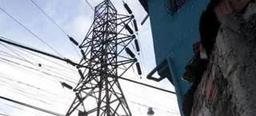
El ministro de Industria, Energía y Turismo, José Manuel Soria, anunció este martes que la tarifa eléctrica de último recurso (TUR), a la que están acogida más de 20 millones de hogares y pymes, subirá el próximo 1 de abril entre el 5 y el 7 %.
En declaraciones a Antena 3, Soria aseguró que el Gobierno debe subir la luz para dar cumplimiento a un auto del Tribunal Supremo que obliga a repercutir en la tarifa eléctrica o a las empresas el haber superado el límite anual de generación de déficit de tarifa, fijado en 1.500 millones de euros.
El ministro aseguró que los consumidores no serán los únicos que soportarán el cumplimiento del citado auto, sino que este se repartirá también con los operadores del sector eléctricoy con las cuentas públicas, ya que, de lo contrario, habría que subir la tarifa un 40%. Algo que ha descartado, porque los consumidores "no pueden soportar toda la carga del desajuste que hay entre los ingresos y los costes del sistema eléctrico".
"Yo creo que se puede pensar que vamos a estar en el entorno de un 5% a un 7%", ha anunciado Soria, que ha confirmado además que este viernes llevará al Consejo de Ministros medidas para reducir el déficit de tarifa.
La subida del recibo de la luz en abril se producirá después de que la última subasta entre comercializadores de último recurso para fijar el término de la energía dentro de la tarifa de luz se cerrara con bajadas del 7,1%.
Este descenso daba margen al Gobierno para aplicar una subida en parecida proporción en abril de la otra parte del recibo, la correspondiente a los costes regulados de la actividad eléctrica, o peajes.
El ministro también ha adelantado que, en las decisiones que se anuncien el viernes sobre el déficit de tarifa, "las eléctricas tendrían que tener otro tipo de medidas que van en la estructura de los costes".
"No todo puede ir a subir los ingresos" a través de la tarifa eléctrica, afirmó Soria, sino que "una parte" de las medidas deben ir destinadas a "subir los ingresos y otra a reducir los costes".
Recorte adicional para Industria
Por otro lado, el ministro anunció que los Presupuestos Generales del Estado (PGE) de 2012 incluirán un recorte adicional de entre 700 y 800 millones de euros en las partidas correspondientes al Ministerio de Industria, Energía y Turismo.
Este importe, sumado a los 1.100 millones de recortes ya anunciados a finales de diciembre, eleva a 1.800 millones el ajuste correspondiente al Ministerio, equivalente a casi un 30% de los 6.500 millones de los que disponía en las cuentas anteriores.
"El presupuesto que vamos a presentar el próximo viernes es el que habría cualquier familia o cualquier empresa", señaló Soria, antes de recordar que "Europa obliga a que no se pueda incurrir en un nivel excesivo de déficit".
Prospecciones en Canarias
Por otro lado, el ministro se mostró partidario de que el petróleo que podría albergar el subsuelo atlántico "lo saque España" y no Marruecos, que se encuentran realizando investigaciones en sus aguas jurisdiccionales, aledañas a Canarias.
Soria señaló que la alta dependencia energética española obliga a mantener unas reservas de hidrocarburos de 18 millones de toneladas para responder a eventuales problemas de suministro e hipotéticas crisis como la que supondría un cierre del estrecho de Ormuz.
"Desde un punto de vista estratégico, económico y energético, es la mejor noticia", señaló, antes de recordar que la extracción de crudo en España apenas ha rondado en los últimos años los 2.500 barriles diarios, frente a los 140.000 barriles que podría ofrecer este yacimiento.
En cuanto a los riesgos medioambientales, aseguró que la "probabilidad" de un vertido es "próxima a cero". "¿Nos puede pasar que salgamos de aquí y nos atropelle un coche? Puede pasar, pero la probabilidad es bastante baja", afirmó.
2012-03-27T07:01:48Z
Obama invita a Rajoy a la Casa Blanca tras su primer encuentro en Seúl
Obama invita a Rajoy a la Casa Blanca tras su primer encuentro en Seúl
EFE
Todavía no se ha cerrado la fecha del encuentro.
"Sé que nuestros equipos están trabajando muy bien juntos", ha dicho Obama.
Obama ha lamentado no poder hablar español, aunque dice que sus hijas lo estudian, y Rajoy le ha dicho que él y sus hijos estudian inglés.
El presidente estadounidense, Barack Obama, ha charlado brevemente en Seúl con el jefe del Ejecutivo español, Mariano Rajoy, y le ha invitado a visitarle en la Casa Blanca, reunión que espera cerrar en breve, según han informado fuentes del Gobierno español.Obama y Rajoy se han saludado poco antes de la foto de familia de la Cumbre de Seguridad Nuclea que se celebra en Seúl y después han vuelto a coincidir durante un par de minutos, antes del inicio de la segunda sesión plenaria."Sé que nuestros equipos están trabajando muy bien juntos", le ha dicho Obama al presidente del Gobierno español, con quien ha comentado la situación económica.El presidente estadounidense le ha señalado que le gustaría recibirle en el despacho oval y ha confiado en poder encontrar pronto una fecha para la reunión. La Casa Blanca, por su parte, ha asegurado que ambos mandatarios han mantenido "una buena conversación", en la que Obama ha reiterado "lo mucho que espera colaborar" con el nuevo jefe de Gobierno y "fortalecer los lazos" entre los dos países. Obama ha lamentado no poder hablar en español, aunque ha apuntado que sus hijas lo están estudiando y le van a enseñar; "podrían hacer de intérpretes", ha bromeado."Mis hijos también estudian inglés. Y yo también", le ha respondido Rajoy, que se ha soltado ya con algunas frases en sus encuentros con mandatarios extranjeros.Posteriormente, en rueda de prensa, Rajoy ha dicho que han hablado "muy poco" y que la preocupación fundamental de Obama era "la situación económica por la que atraviesa el mundo. Pero no hemos entrado en detalles".El primer contacto de Rajoy con Obama tuvo lugar el 20 de diciembre, cuando el estadounidense le llamó para felicitarle por su investidura como presidente del Gobierno y le trasladó el apoyo de EEUU a la agenda económica y de reformas que había presentado. Ambos se mostraron ya entonces de acuerdo en cooperar e impulsar las "excelentes relaciones" bilaterales. Pocas semanas antes, cuando todavía no se había instalado en el Palacio de la Moncloa, Rajoy se había reunido en Marsella con el secretario del Tesoro estadounidense, Timothy Geithner. En la localidad francesa, donde se celebraba un congreso del Partido Popular Europeo, Geithner le expresó su apoyo a las líneas de actuación económica que había anunciado. Con la cita en la Casa Blanca todavía en el aire, Obama y Rajoy volverán a encontrarse en mayo en Chicago durante la cumbre de la OTAN, donde previsiblemente suscribirán el acuerdo que integrará la base de Rota (Cádiz) en el escudo antimisiles de la Alianza Atlántica.
EFE
- Todavía no se ha cerrado la fecha del encuentro.
- "Sé que nuestros equipos están trabajando muy bien juntos", ha dicho Obama.
- Obama ha lamentado no poder hablar español, aunque dice que sus hijas lo estudian, y Rajoy le ha dicho que él y sus hijos estudian inglés.
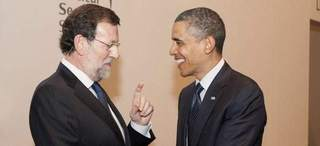
El presidente estadounidense, Barack Obama, ha charlado brevemente en Seúl con el jefe del Ejecutivo español, Mariano Rajoy, y le ha invitado a visitarle en la Casa Blanca, reunión que espera cerrar en breve, según han informado fuentes del Gobierno español.
Obama y Rajoy se han saludado poco antes de la foto de familia de la Cumbre de Seguridad Nuclea que se celebra en Seúl y después han vuelto a coincidir durante un par de minutos, antes del inicio de la segunda sesión plenaria.
"Sé que nuestros equipos están trabajando muy bien juntos", le ha dicho Obama al presidente del Gobierno español, con quien ha comentado la situación económica.
El presidente estadounidense le ha señalado que le gustaría recibirle en el despacho oval y ha confiado en poder encontrar pronto una fecha para la reunión.
La Casa Blanca, por su parte, ha asegurado que ambos mandatarios han mantenido "una buena conversación", en la que Obama ha reiterado "lo mucho que espera colaborar" con el nuevo jefe de Gobierno y "fortalecer los lazos" entre los dos países.
Obama ha lamentado no poder hablar en español, aunque ha apuntado que sus hijas lo están estudiando y le van a enseñar; "podrían hacer de intérpretes", ha bromeado.
"Mis hijos también estudian inglés. Y yo también", le ha respondido Rajoy, que se ha soltado ya con algunas frases en sus encuentros con mandatarios extranjeros.
Posteriormente, en rueda de prensa, Rajoy ha dicho que han hablado "muy poco" y que la preocupación fundamental de Obama era "la situación económica por la que atraviesa el mundo. Pero no hemos entrado en detalles".
El primer contacto de Rajoy con Obama tuvo lugar el 20 de diciembre, cuando el estadounidense le llamó para felicitarle por su investidura como presidente del Gobierno y le trasladó el apoyo de EEUU a la agenda económica y de reformas que había presentado.
Ambos se mostraron ya entonces de acuerdo en cooperar e impulsar las "excelentes relaciones" bilaterales.
Pocas semanas antes, cuando todavía no se había instalado en el Palacio de la Moncloa, Rajoy se había reunido en Marsella con el secretario del Tesoro estadounidense, Timothy Geithner.
En la localidad francesa, donde se celebraba un congreso del Partido Popular Europeo, Geithner le expresó su apoyo a las líneas de actuación económica que había anunciado.
Con la cita en la Casa Blanca todavía en el aire, Obama y Rajoy volverán a encontrarse en mayo en Chicago durante la cumbre de la OTAN, donde previsiblemente suscribirán el acuerdo que integrará la base de Rota (Cádiz) en el escudo antimisiles de la Alianza Atlántica.
2012-03-27T03:54:39Z
Rajoy asegura a la ONU que España sigue comprometida con la Alianza de Civilizaciones
Rajoy asegura a la ONU que España sigue comprometida con la Alianza de Civilizaciones
EFE
Se lo ha asegurado al Secretario General de las Naciones Unida, Ban Ki-mon.
Si bien advierte de las "enormes restricciones presupuestarias" que tiene España.
Ban ha agradecido a Rajoy el trabajo español en Líbano y en el programa de los Objetivos de Desarrollo del Milenio.
El presidente del Gobierno, Mariano Rajoy, ha garantizado este martes al secretario general de la ONU, Ban Ki-moon, que España mantiene su "compromiso político" con la Alianza de Civilizaciones, aunque también le ha advertido de las "enormes restricciones presupuestarias" que tiene el país.Ambos se han reunido en Seúl, donde participan en la II Cumbre de Seguridad Nuclear, y, según han explicado fuentes del Ejecutivo español, Rajoy ha manifestado el deseo de España de que la Alianza tenga visibilidad y sea operativa.Ban ha elogiado el papel de España tanto en esta iniciativa como en otros programas de la organización y Rajoy ha prometido seguir trabajando de forma conjunta, aunque también ha explicado a Ban la complicada situación económica que atraviesa España.Según han explicado fuentes del Ejecutivo, el surcoreano se ha mostrado comprensivo, ya que también él ha tenido que recortar el presupuestos de Naciones Unidas.Ban ha agradecido también a Rajoy el trabajo español en Líbano y en el programa de los Objetivos de Desarrollo del Milenio.Iniciativa de ZapateroFue su antecesor en el cargo, José Luis Rodríguez Zapatero, quien lanzó en 2004 esta iniciativa ante la Asamblea General de Naciones Unidas. Turquía copatrocinó el proyecto, al que se han adherido más de un centenar de países, y la ONU lo hizo suyo.Ban y Rajoy se encontrarán de nuevo en la Conferencia de las Naciones Unidas sobre Desarrollo Sostenible (Río+20) que se celebrará en Brasil el 20 y el 21 de junio, un foro al que Ban otorga una importancia histórica, según las fuentes consultadas.
EFE
- Se lo ha asegurado al Secretario General de las Naciones Unida, Ban Ki-mon.
- Si bien advierte de las "enormes restricciones presupuestarias" que tiene España.
- Ban ha agradecido a Rajoy el trabajo español en Líbano y en el programa de los Objetivos de Desarrollo del Milenio.
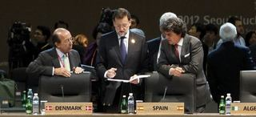
El presidente del Gobierno, Mariano Rajoy, ha garantizado este martes al secretario general de la ONU, Ban Ki-moon, que España mantiene su "compromiso político" con la Alianza de Civilizaciones, aunque también le ha advertido de las "enormes restricciones presupuestarias" que tiene el país.
Ambos se han reunido en Seúl, donde participan en la II Cumbre de Seguridad Nuclear, y, según han explicado fuentes del Ejecutivo español, Rajoy ha manifestado el deseo de España de que la Alianza tenga visibilidad y sea operativa.
Ban ha elogiado el papel de España tanto en esta iniciativa como en otros programas de la organización y Rajoy ha prometido seguir trabajando de forma conjunta, aunque también ha explicado a Ban la complicada situación económica que atraviesa España.
Según han explicado fuentes del Ejecutivo, el surcoreano se ha mostrado comprensivo, ya que también él ha tenido que recortar el presupuestos de Naciones Unidas.
Ban ha agradecido también a Rajoy el trabajo español en Líbano y en el programa de los Objetivos de Desarrollo del Milenio.
Iniciativa de Zapatero
Fue su antecesor en el cargo, José Luis Rodríguez Zapatero, quien lanzó en 2004 esta iniciativa ante la Asamblea General de Naciones Unidas. Turquía copatrocinó el proyecto, al que se han adherido más de un centenar de países, y la ONU lo hizo suyo.
Ban y Rajoy se encontrarán de nuevo en la Conferencia de las Naciones Unidas sobre Desarrollo Sostenible (Río+20) que se celebrará en Brasil el 20 y el 21 de junio, un foro al que Ban otorga una importancia histórica, según las fuentes consultadas.
2012-03-26T18:49:20Z
Los altos cargos políticos no podrán aceptar regalos que superen "la cortesía"
Los altos cargos políticos no podrán aceptar regalos que superen "la cortesía"
EFE
Según figura en el anteproyecto de Ley de Transparencia.
El Ejecutivo ha hecho público este lunes este anteproyecto.
Los ciudadanos podrán plantear sus aportaciones a la norma.
CLAVES de la Ley de transparencia.
Los altos cargos de la administración no aceptarán regalos que superen los "usos habituales, sociales o de cortesía", ni favores o servicios que condicionen el desarrollo de sus funciones, según figura en el anteproyecto de Ley de Transparencia, Acceso a la Información Pública y Buen Gobierno. El Ejecutivo ha hecho público este lunes este anteproyecto, que vio el Consejo de Ministros el pasado viernes, y ha abierto un proceso de quince días en el que los ciudadanos podrán plantear sus aportaciones a la norma.El texto también incluye que se deberán devolver las cantidades percibidas o satisfechas indebidamente en el caso de la infracciones en materia de gestión económica-presupuestaria que fijará la ley. Asimismo, indica que cuando se reciban obsequios de "una mayor relevancia institucional se procederá a la incorporación al patrimonio del Estado".Estos preceptos se incluyen en el apartado del Buen Gobierno, que recoge los principios éticos y de actuación de altos cargos, además de las infracciones y sanciones en el caso de incumplimientos. Los gestores deberán actuar con "transparencia" en la gestión de los asuntos públicos y bajo los principios de "eficacia, economía y eficiencia". Además, asumirán la responsabilidad de las decisiones propias y de los organismos que dirigen, sin perjuicio de otras que fueran exigibles legalmente.El texto indica que desempeñarán su actividad con plena dedicación y se abstendrán de toda actividad privada que pueda suponer un conflicto de intereses con su puesto. También se precisan en el texto los límites al derecho al acceso a la información cuando perjudiquen los intereses económicos y judiciales, la política económica y monetaria, la protección del medio ambiente, la igualdad de las partes en procesos judiciales, el secreto profesional y la propiedad intelectual, entre otros.En el apartado de sanciones, se establece la posibilidad de inhabilitación para ocupar cargos públicos durante un periodo entre cinco y diez años en el caso de cometer faltas graves o muy graves. Entre ellas, se encuentran las de actuaciones de discriminación, la adopción de acuerdos ilegales, el incumplimiento de la obligación de atender los servicios esenciales de huelga, beneficiarse ilegalmente por la prevalencia de un cargo, la obstaculización al ejercicio de las libertades públicas y derechos sindicales y la incomparecencia injustificada ante órganos parlamentarios. La nueva ley determina como infracciones muy graves además, en el ámbito de gestión económica, los compromisos de gastos y ordenación de pagos sin crédito suficiente para realizarlos, el incumplimiento de las obligaciones fijadas en la ley de estabilidad presupuestaria y la concesión de una subvención a una administración pública sin el previo informe del Ministerio de Hacienda.Las disposiciones de la ley, en materia de transparencia de la actividad pública, se aplicarán a la Administración General del Estado, las CC AA, las entidades locales, los organismos con funciones de regulación sobre un determinado sector, y las entidades dependientes de las administraciones públicas incluidas las Universidades. También al Congreso, el Senado, el Tribunal Constitucional y el Consejo General del Poder Judicial, así como al Defensor del Pueblo, el Consejo de Estado, el Tribunal de Cuentas y el Consejo Económico y Social y las instituciones autonómicas análogas, en relación con sus actividades sujetas a derecho administrativo. A ellas se suman las sociedades mercantiles con capital superior al 50% de todas las entidades sometidas a la ley, así como las asociaciones constituidas por estas y las fundaciones del sector público.Todas las administraciones públicas deberán publicar en sus sedes electrónicas o páginas web sus funciones, organigrama, planes en los que fijen sus objetivos y grado de cumplimiento. Igualmente, están obligadas a hacer públicos, entre otros datos, los contratos adjudicados, importe de licitación y adjudicación, subvenciones y ayudas públicas concedidas con indicación de su importe y las retribuciones percibidas por los órganos directivos.El proyecto determina el procedimiento que han de seguir los ciudadanos para tener acceso a la información pública, pero se podrá rechazar la petición, por ejemplo cuando haya solicitudes "manifiestamente repetitivas y tengan un carácter abusivo no justificado".La resolución en la que se conceda o deniegue el acceso deberá notificarse en el plazo máximo de un mes desde la recepción de la solicitud, aunque podrá ampliarse otro mes en función del volumen o complejidad de la información solicitada. El texto especifica que transcurrido el plazo máximo para resolver sin que se haya dictado y notificado resolución expresa se entenderá que la solicitud ha sido desestimada. En el apartado dedicado a la protección de datos personales, se especifica que se denegará el acceso a la información si contiene datos especialmente protegidos, salvo que el titular lo consienta.
EFE
- Según figura en el anteproyecto de Ley de Transparencia.
- El Ejecutivo ha hecho público este lunes este anteproyecto.
- Los ciudadanos podrán plantear sus aportaciones a la norma.
-
CLAVES de la Ley de transparencia.
-
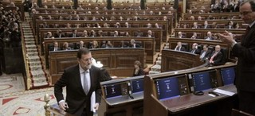
Los altos cargos de la administración no aceptarán regalos que superen los "usos habituales, sociales o de cortesía", ni favores o servicios que condicionen el desarrollo de sus funciones, según figura en el anteproyecto de Ley de Transparencia, Acceso a la Información Pública y Buen Gobierno. El Ejecutivo ha hecho público este lunes este anteproyecto, que vio el Consejo de Ministros el pasado viernes, y ha abierto un proceso de quince días en el que los ciudadanos podrán plantear sus aportaciones a la norma.
El texto también incluye que se deberán devolver las cantidades percibidas o satisfechas indebidamente en el caso de la infracciones en materia de gestión económica-presupuestaria que fijará la ley. Asimismo, indica que cuando se reciban obsequios de "una mayor relevancia institucional se procederá a la incorporación al patrimonio del Estado".
Estos preceptos se incluyen en el apartado del Buen Gobierno, que recoge los principios éticos y de actuación de altos cargos, además de las infracciones y sanciones en el caso de incumplimientos. Los gestores deberán actuar con "transparencia" en la gestión de los asuntos públicos y bajo los principios de "eficacia, economía y eficiencia". Además, asumirán la responsabilidad de las decisiones propias y de los organismos que dirigen, sin perjuicio de otras que fueran exigibles legalmente.
El texto indica que desempeñarán su actividad con plena dedicación y se abstendrán de toda actividad privada que pueda suponer un conflicto de intereses con su puesto. También se precisan en el texto los límites al derecho al acceso a la información cuando perjudiquen los intereses económicos y judiciales, la política económica y monetaria, la protección del medio ambiente, la igualdad de las partes en procesos judiciales, el secreto profesional y la propiedad intelectual, entre otros.
En el apartado de sanciones, se establece la posibilidad de inhabilitación para ocupar cargos públicos durante un periodo entre cinco y diez años en el caso de cometer faltas graves o muy graves. Entre ellas, se encuentran las de actuaciones de discriminación, la adopción de acuerdos ilegales, el incumplimiento de la obligación de atender los servicios esenciales de huelga, beneficiarse ilegalmente por la prevalencia de un cargo, la obstaculización al ejercicio de las libertades públicas y derechos sindicales y la incomparecencia injustificada ante órganos parlamentarios.
La nueva ley determina como infracciones muy graves además, en el ámbito de gestión económica, los compromisos de gastos y ordenación de pagos sin crédito suficiente para realizarlos, el incumplimiento de las obligaciones fijadas en la ley de estabilidad presupuestaria y la concesión de una subvención a una administración pública sin el previo informe del Ministerio de Hacienda.
Las disposiciones de la ley, en materia de transparencia de la actividad pública, se aplicarán a la Administración General del Estado, las CC AA, las entidades locales, los organismos con funciones de regulación sobre un determinado sector, y las entidades dependientes de las administraciones públicas incluidas las Universidades. También al Congreso, el Senado, el Tribunal Constitucional y el Consejo
General del Poder Judicial, así como al Defensor del Pueblo, el Consejo de Estado, el Tribunal de Cuentas y el Consejo Económico y Social y las instituciones autonómicas análogas, en relación con sus actividades sujetas a derecho administrativo. A ellas se suman las sociedades mercantiles con capital superior al 50% de todas las entidades sometidas a la ley, así como las asociaciones constituidas por estas y las fundaciones del sector público.
Todas las administraciones públicas deberán publicar en sus sedes electrónicas o páginas web sus funciones, organigrama, planes en los que fijen sus objetivos y grado de cumplimiento. Igualmente, están obligadas a hacer públicos, entre otros datos, los contratos adjudicados, importe de licitación y adjudicación, subvenciones y ayudas públicas concedidas con indicación de su importe y las retribuciones percibidas por los órganos directivos.
El proyecto determina el procedimiento que han de seguir los ciudadanos para tener acceso a la información pública, pero se podrá rechazar la petición, por ejemplo cuando haya solicitudes "manifiestamente repetitivas y tengan un carácter abusivo no justificado".
La resolución en la que se conceda o deniegue el acceso deberá notificarse en el plazo máximo de un mes desde la recepción de la solicitud, aunque podrá ampliarse otro mes en función del volumen o complejidad de la información solicitada. El texto especifica que transcurrido el plazo máximo para resolver sin que se haya dictado y notificado resolución expresa se entenderá que la solicitud ha sido desestimada. En el apartado dedicado a la protección de datos personales, se especifica que se denegará el acceso a la información si contiene datos especialmente protegidos, salvo que el titular lo consienta.
2012-03-26T16:28:44Z
Griñán abre una negociación para pactar con IU un Gobierno de "estabilidad" en Andalucía
Griñán abre una negociación para pactar con IU un Gobierno de "estabilidad" en Andalucía
EFE
El candidato a la Junta ha situado su primer objetivo en dar respuesta a la tendencia de izquierdas que ha expresado en las urnas el pueblo andaluz.
La previsión de José Antonio Griñán es que pasada la Semana Santa podrían concretarse las negociaciones con Izquierda Unida.
Diego Valderas (Izquierda Unida): "Combatimos las políticas de derecha, pero no es un cheque en blanco para nadie".
Resultados de las elecciones autonómicas en Andalucía.
BLOG: 'El 25-M, en 7 claves'.
La Comisión Ejecutiva Regional del PSOE de Andalucía ha acordado este lunes la apertura de una negociación con el resto de fuerzas andaluzas, pero específicamente con IU, para intentar alcanzar un acuerdo para el futuro Gobierno autonómico, ha anunciado su secretario general José Antonio Griñán.En un comparecencia de prensa, el candidato a la Junta ha situado su primer objetivo en dar respuesta a la tendencia de izquierdas que mayoritariamente ha expresado en las urnas el pueblo andaluz y conseguir un Gobierno de "estabilidad" para los próximos cuatro años que de soluciones a los problemas económicos de la comunidad."La Ejecutiva ha mandatado para dialogar con otras fuerzas y lo vamos a hacer con humildad, ilusión y transparencia, sobre un programa de izquierda que conocerán los ciudadanos", ha indicado.El 19 de abril se constituye el nuevo Parlamento compuesto por 50 diputados del PP, 47 del PSOE y 12 de IU, pero la previsión de Griñán es que pasada la Semana Santa podrían concretarse las negociaciones con IU.Aunque ha hablado del objetivo de conseguir la "estabilidad", el dirigente socialista no ha querido concretar cuál puede ser el resultado final de las negociaciones si un pacto de Gobierno o acuerdos de legislatura, aunque ha puesto una condición: "El próximo Gobierno habrá de ser paritario"."Me planteo todas las posibilidades cuando empieza un camino, habrá que hablar mucho, muy detenidamente y ya veremos a donde se llega, pero es evidente forjar algo similar a lo que ha dicho el pueblo andaluz en la urnas, que quiere un gobierno de izquierdas", ha manifestado.Los casos de corrupción, ha afirmado que la "misma intolerancia que tuvimos la vamos a seguir manteniendo" y se ha comprometido a "seguir denunciado" ante la justicia todo lo que sea irregular "caiga quien caiga, porque es lo que quiere" la militancia y la ciudadanía. La oferta de diálogo incluye también al Gobierno de España desde el "respeto y la lealtad" institucional. "No queremos enfrentamientos, vamos a pedir respeto de ida y vuelta", ha apostillado.Andalucía, referente de la izquierdaSobre los resultados electorales, el secretario general ha estimado que Andalucía se ha convertido en un "referente" nacional de la izquierda y que su partido "ha frenado la deriva" de los comicios generales del 20 de noviembre.El candidato ha expresado la "inmensa gratitud" hacia el millón y medio de andaluces que ha apoyado a su partido, lo que ha justificado en que quieren que defienda un modelo de sociedad "justo, decente y comprometido" con las políticas públicas y la protección social.El resultado, según ha dicho, avala la decisión de no hacer coincidir las elecciones andaluzas con las generales, una decisión que tomó por "razones objetivas" de cumplimiento de calendario legislativo y por la estabilidad parlamentaria."Este partido tiene una militancia extraordinaria, es un tesoro, y la dirección es deudora de ella", ha agradecido Griñán, que ignoraba que al finalizar la rueda de prensa los trabajadores y militantes del PSOE-A le tenían preparada una sorpresa. Era una tarta cuadrada con la leyenda "Andalucía por el camino seguro", el eslogan de campaña, que Griñán compartió a la entrada de las sede socialista con militantes, dirigentes y periodistas.Diego Valderas, por su parte, preguntado este lunes si IULV-CA entrará en un gobierno de coalición con el PSOE-A, ha asegurado que "lo importante son las políticas" porque los ciudadanos "quieren que se resuelva el desempleo, la tasa de pobreza y las políticas tan injustas con las que han sido golpeados por PSOE y PP dando un giro diferente".
EFE
- El candidato a la Junta ha situado su primer objetivo en dar respuesta a la tendencia de izquierdas que ha expresado en las urnas el pueblo andaluz.
- La previsión de José Antonio Griñán es que pasada la Semana Santa podrían concretarse las negociaciones con Izquierda Unida.
- Diego Valderas (Izquierda Unida): "Combatimos las políticas de derecha, pero no es un cheque en blanco para nadie".
- Resultados de las elecciones autonómicas en Andalucía.
-
BLOG: 'El 25-M, en 7 claves'.
La Comisión Ejecutiva Regional del PSOE de Andalucía ha acordado este lunes la apertura de una negociación con el resto de fuerzas andaluzas, pero específicamente con IU, para intentar alcanzar un acuerdo para el futuro Gobierno autonómico, ha anunciado su secretario general José Antonio Griñán.
En un comparecencia de prensa, el candidato a la Junta ha situado su primer objetivo en dar respuesta a la tendencia de izquierdas que mayoritariamente ha expresado en las urnas el pueblo andaluz y conseguir un Gobierno de "estabilidad" para los próximos cuatro años que de soluciones a los problemas económicos de la comunidad.
"La Ejecutiva ha mandatado para dialogar con otras fuerzas y lo vamos a hacer con humildad, ilusión y transparencia, sobre un programa de izquierda que conocerán los ciudadanos", ha indicado.
El 19 de abril se constituye el nuevo Parlamento compuesto por 50 diputados del PP, 47 del PSOE y 12 de IU, pero la previsión de Griñán es que pasada la Semana Santa podrían concretarse las negociaciones con IU.
Aunque ha hablado del objetivo de conseguir la "estabilidad", el dirigente socialista no ha querido concretar cuál puede ser el resultado final de las negociaciones si un pacto de Gobierno o acuerdos de legislatura, aunque ha puesto una condición: "El próximo Gobierno habrá de ser paritario".
"Me planteo todas las posibilidades cuando empieza un camino, habrá que hablar mucho, muy detenidamente y ya veremos a donde se llega, pero es evidente forjar algo similar a lo que ha dicho el pueblo andaluz en la urnas, que quiere un gobierno de izquierdas", ha manifestado.
Los casos de corrupción, ha afirmado que la "misma intolerancia que tuvimos la vamos a seguir manteniendo" y se ha comprometido a "seguir denunciado" ante la justicia todo lo que sea irregular "caiga quien caiga, porque es lo que quiere" la militancia y la ciudadanía. La oferta de diálogo incluye también al Gobierno de España desde el "respeto y la lealtad" institucional. "No queremos enfrentamientos, vamos a pedir respeto de ida y vuelta", ha apostillado.
Andalucía, referente de la izquierda
Sobre los resultados electorales, el secretario general ha estimado que Andalucía se ha convertido en un "referente" nacional de la izquierda y que su partido "ha frenado la deriva" de los comicios generales del 20 de noviembre.
El candidato ha expresado la "inmensa gratitud" hacia el millón y medio de andaluces que ha apoyado a su partido, lo que ha justificado en que quieren que defienda un modelo de sociedad "justo, decente y comprometido" con las políticas públicas y la protección social.
El resultado, según ha dicho, avala la decisión de no hacer coincidir las elecciones andaluzas con las generales, una decisión que tomó por "razones objetivas" de cumplimiento de calendario legislativo y por la estabilidad parlamentaria.
"Este partido tiene una militancia extraordinaria, es un tesoro, y la dirección es deudora de ella", ha agradecido Griñán, que ignoraba que al finalizar la rueda de prensa los trabajadores y militantes del PSOE-A le tenían preparada una sorpresa. Era una tarta cuadrada con la leyenda "Andalucía por el camino seguro", el eslogan de campaña, que Griñán compartió a la entrada de las sede socialista con militantes, dirigentes y periodistas.
Diego Valderas, por su parte, preguntado este lunes si IULV-CA entrará en un gobierno de coalición con el PSOE-A, ha asegurado que "lo importante son las políticas" porque los ciudadanos "quieren que se resuelva el desempleo, la tasa de pobreza y las políticas tan injustas con las que han sido golpeados por PSOE y PP dando un giro diferente".
2012-03-26T16:00:46Z
El presidente Rajoy responde a las críticas de Monti: "Yo nunca haré declaraciones de ese tipo"
El presidente Rajoy responde a las críticas de Monti: "Yo nunca haré declaraciones de ese tipo"
EFE
Con esta lacónica respuesta, Rajoy ha eludido comentar en Seúl su opinión sobre las palabras de Monti acerca de la "preocupación" por España.
Monti califica de malentendido sus críticas a España y Rajoy.
Rajoy y Monti coinciden este martes en la Cumbre de Seguridad Nuclear de Seúl.
El presidente del Gobierno celebrará su 57 cumpleaños en Corea del Sur.
El jefe del Ejecutivo español, Mariano Rajoy, concidió este martes en la II Cumbre de Seguridad Nuclear con el primer ministro italiano, Mario Monti, no habiendo querido avanzar si tenía intención de pedirle explicaciones por sus críticas a España: "dejémoslo en que yo nunca haré declaraciones de ese tipo".Con esta lacónica respuesta Rajoy eludió comentar a su llegada a Seúl su opinión sobre las palabras de Monti, quien dijo el sábado que "España está dando motivos de gran preocupación a Europa", ya que su situación económica podría provocar "un efecto contagio que podría extenderse por el continente".El italiano, en un acto de la Confederación General de Comercio de su país, elogió la reforma laboral diseñada por el Gobierno de Rajoy, pero consideró que "no ha prestado igual atención a las cuentas públicas".El Ejecutivo español, molesto, exigió una rectificación y la portavoz del presidente del Consejo italiano, Elisabetta Olivi, difundió un comunicado en el que Monti expresaba "su total confianza en la determinación del Gobierno español con respecto a la consolidación fiscal y también a las medidas que adoptará para evitar la subida de la prima de riesgo".Rajoy y Monti coninciden este martes en la segunda y última jornada de la Cumbre de Seguridad Nuclear de Seúl.Monti: "fue un malentendido"El primer ministro italiano, Mario Monti, ha asegurado que sus críticas a la situación económica española fueron un "malentendido". A su vez, Rajoy le ha recordado la necesidad de que los socios europeos sean "solidarios" en momentos de dificultad.Fuentes del Ejecutivo español han resumido con estas palabras la reunión bilateral que Rajoy y Monti han mantenido en Seúl. En ella Monti ha explicado a Rajoy que sus palabras deben interpretarse como una llamada a todos los socios a "no relajarse en el esfuerzo".Según han señalado las fuentes de la delegación española, tras insistir en que los países monitorizados por Bruselas tienen mucho trabajo por delante, Monti ha destacado que siempre ha subrayado la "rapidez" con la que ha actuado el Ejecutivo español y la "determinación" de su reforma laboral.El italiano ha garantizado a Rajoy que no es costumbre del Gobierno italiano comentar las políticas de otro país y que, en cualquier caso, sólo lo haría para elogiar la reforma laboral.Cumpleaños en Seúl
El presidente del Gobierno, Mariano Rajoy, celebrará su 57 cumpleaños este martes alejado de su familia, en Seúl. Apenas tendrá tiempo para festejos, ya que además de intervenir en el plenario, ha incluido en su agenda hasta siete entrevistas bilaterales, aprovechando la presencia de más de cuarenta jefes de Estado y de gobierno en la capital surcoreana.La jornada concluirá con una cena oficial que ofrecerá a sus invitados el presidente surcoreano, Lee Myung-bak.Rajoy se reunirá con él en su residencia oficial de la Casa azul el miércoles, antes de regresar a Madrid.
EFE
- Con esta lacónica respuesta, Rajoy ha eludido comentar en Seúl su opinión sobre las palabras de Monti acerca de la "preocupación" por España.
- Monti califica de malentendido sus críticas a España y Rajoy.
- Rajoy y Monti coinciden este martes en la Cumbre de Seguridad Nuclear de Seúl.
- El presidente del Gobierno celebrará su 57 cumpleaños en Corea del Sur.
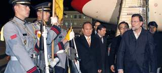
El jefe del Ejecutivo español, Mariano Rajoy, concidió este martes en la II Cumbre de Seguridad Nuclear con el primer ministro italiano, Mario Monti, no habiendo querido avanzar si tenía intención de pedirle explicaciones por sus críticas a España: "dejémoslo en que yo nunca haré declaraciones de ese tipo".
Con esta lacónica respuesta Rajoy eludió comentar a su llegada a Seúl su opinión sobre las palabras de Monti, quien dijo el sábado que "España está dando motivos de gran preocupación a Europa", ya que su situación económica podría provocar "un efecto contagio que podría extenderse por el continente".
El italiano, en un acto de la Confederación General de Comercio de su país, elogió la reforma laboral diseñada por el Gobierno de Rajoy, pero consideró que "no ha prestado igual atención a las cuentas públicas".
El Ejecutivo español, molesto, exigió una rectificación y la portavoz del presidente del Consejo italiano, Elisabetta Olivi, difundió un comunicado en el que Monti expresaba "su total confianza en la determinación del Gobierno español con respecto a la consolidación fiscal y también a las medidas que adoptará para evitar la subida de la prima de riesgo".
Rajoy y Monti coninciden este martes en la segunda y última jornada de la Cumbre de Seguridad Nuclear de Seúl.
Monti: "fue un malentendido"
El primer ministro italiano, Mario Monti, ha asegurado que sus críticas a la situación económica española fueron un "malentendido". A su vez, Rajoy le ha recordado la necesidad de que los socios europeos sean "solidarios" en momentos de dificultad.
Fuentes del Ejecutivo español han resumido con estas palabras la reunión bilateral que Rajoy y Monti han mantenido en Seúl. En ella Monti ha explicado a Rajoy que sus palabras deben interpretarse como una llamada a todos los socios a "no relajarse en el esfuerzo".
Según han señalado las fuentes de la delegación española, tras insistir en que los países monitorizados por Bruselas tienen mucho trabajo por delante, Monti ha destacado que siempre ha subrayado la "rapidez" con la que ha actuado el Ejecutivo español y la "determinación" de su reforma laboral.
El italiano ha garantizado a Rajoy que no es costumbre del Gobierno italiano comentar las políticas de otro país y que, en cualquier caso, sólo lo haría para elogiar la reforma laboral.
Cumpleaños en Seúl
El presidente del Gobierno, Mariano Rajoy, celebrará su 57 cumpleaños este martes alejado de su familia, en Seúl. Apenas tendrá tiempo para festejos, ya que además de intervenir en el plenario, ha incluido en su agenda hasta siete entrevistas bilaterales, aprovechando la presencia de más de cuarenta jefes de Estado y de gobierno en la capital surcoreana.
La jornada concluirá con una cena oficial que ofrecerá a sus invitados el presidente surcoreano, Lee Myung-bak.
Rajoy se reunirá con él en su residencia oficial de la Casa azul el miércoles, antes de regresar a Madrid.
2012-03-26T14:21:50Z
Rajoy rechaza que los votantes les hayan pasado factura por las reformas del Gobierno central
Rajoy rechaza que los votantes les hayan pasado factura por las reformas del Gobierno central
EFE
"En política no siempre consigue uno el 100% de los objetivos que se propone", ha manifestado el presidente del Gobierno a su llegada a Seúl.
Para él, el resultado de las elecciones en Andalucía no son un fracaso "en absoluto".
Sobre las críticas recibidas por el primer ministro italiano, Mario Monti, ha sido tajante: "Dejémoslo en que yo nunca haré declaraciones de ese tipo".
ANDALUCÍA: Primera victoria del PP en el feudo socialista.
ASTURIAS: El PSOE gana, pero FAC y PP sumarían mayoría.
BLOG de Arsenio Escolar: "El 25-M en siete claves".
El PP habla de "reflexión y humildad" y el PSOE de "un balón de oxígeno" electoral.
El presidente del Gobierno español, Mariano Rajoy, se ha mostrado este lunes "orgulloso" del PP andaluz y de su líder, Javier Arenas, por el "gran resultado" obtenido en las elecciones del domingo, aunque no pueda gobernar, y ha asegurado que las reformas continuarán porque "España no se puede quedar parada". "En política no siempre consigue uno el 100% de los objetivos que se propone", ha manifestado Rajoy en una primera valoración de los comicios autonómicos andaluces a su llegada a Seúl, donde este martes participará en la II Cumbre de Seguridad Nuclear.A su juicio, el resultado de las elecciones no es un fracaso "en absoluto", ya que los populares han logrado "el mejor resultado en la historia" del partido y han ganado los comicios, a pesar de no haber conseguido la mayoría absoluta necesaria para dirigir la Junta.Rajoy ha rechazado también que los votantes hayan podido pasar factura a los 'populares' por las reformas que ha puesto en marcha el Gobierno central y ha recordado la complicada situación que atraviesa el país con la desviación del déficit público en 2011, "inaceptables" cifras de paro y dificultades en los mercados internacionales."Tenemos problemas para financiarnos en los mercados, está la UE detrás; estamos haciendo lo que tenemos que hacer", ha subrayado."Hay que hacer reformas"Rajoy ha dejado claro que las reformas continuarán en los próximos meses "porque es lo que España necesita; no es un capricho". Y ha señalado que él nunca ocultó que "esto no iba a ser fácil, que era muy difícil", y que las medidas tardarán en producir efectos. El viernes el Consejo de Ministros aprobará unos presupuestos generales del Estado que serán "muy austeros" y en abril y mayo el Ejecutivo seguirá con las reformas, confiando en contar "con la compresión de la gente".Rajoy se ha comprometido a explicar "todo lo que se hace", pero ha garantizado que no cambiará su gestión porque "España hoy no se puede quedar parada ni anclada treinta años atrás"."Hay que mirar al futuro, hay que hacer reformas; los demás las hacen y nos estamos jugando el futuro de España, no de los próximos dos años, sino el futuro de España en muchos años", ha advertido.Elogios al PP andaluzEl presidente del PP ha preferido poner el acento en el avance logrado por sus compañeros andaluces y ha ratificado la validez de sus propuestas. "Nunca habíamos tenido un resultado tan bueno, hemos ganado las elecciones, nunca las habíamos ganado, hemos mejorado muestra posición respecto a las últimas autonómicas. Nos hubiera gustado, como es natural y todo el mundo sabe, gobernar, pero nosotros vamos a seguir ahí", ha añadido. Tras asegurar que sus compañeros en Andalucía "lo han hecho muy bien, especialmente Javier Arenas", ha asegurado que el discurso que han mantenido sigue en vigor, por lo que el PP continuará trabajando para que en Andalucía se reduzca pronto el paro y se genere actividad económica."Estoy muy orgulloso de mis compañeros de partido, muy contento, han tenido un gran resultado, hay mucha gente que nos ha votado y vamos a tener en cuenta también lo que han pensado esas personas que han confiado en nosotros y vamos a seguir adelante", ha insistido.Sobre las críticas de MontiEl jefe del Ejecutivo español, que coincidirá este martes en la II Cumbre de Seguridad Nuclear con el primer ministro italiano, Mario Monti, no ha querido avanzar si tiene intención de pedirle explicaciones por sus críticas a España: "Dejémoslo en que yo nunca haré declaraciones de ese tipo".Con esta lacónica respuesta Rajoy ha eludido comentar a su llegada a Seúl su opinión sobre las palabras de Monti, quien dijo el sábado que "España está dando motivos de gran preocupación a Europa", ya que su situación económica podría provocar "un efecto contagio que podría extenderse por el continente".
EFE
- "En política no siempre consigue uno el 100% de los objetivos que se propone", ha manifestado el presidente del Gobierno a su llegada a Seúl.
- Para él, el resultado de las elecciones en Andalucía no son un fracaso "en absoluto".
- Sobre las críticas recibidas por el primer ministro italiano, Mario Monti, ha sido tajante: "Dejémoslo en que yo nunca haré declaraciones de ese tipo".
-
ANDALUCÍA: Primera victoria del PP en el feudo socialista.
-
ASTURIAS: El PSOE gana, pero FAC y PP sumarían mayoría.
- BLOG de Arsenio Escolar: "El 25-M en siete claves".
- El PP habla de "reflexión y humildad" y el PSOE de "un balón de oxígeno" electoral.
El presidente del Gobierno español, Mariano Rajoy, se ha mostrado este lunes "orgulloso" del PP andaluz y de su líder, Javier Arenas, por el "gran resultado" obtenido en las elecciones del domingo, aunque no pueda gobernar, y ha asegurado que las reformas continuarán porque "España no se puede quedar parada".
"En política no siempre consigue uno el 100% de los objetivos que se propone", ha manifestado Rajoy en una primera valoración de los comicios autonómicos andaluces a su llegada a Seúl, donde este martes participará en la II Cumbre de Seguridad Nuclear.
A su juicio, el resultado de las elecciones no es un fracaso "en absoluto", ya que los populares han logrado "el mejor resultado en la historia" del partido y han ganado los comicios, a pesar de no haber conseguido la mayoría absoluta necesaria para dirigir la Junta.
Rajoy ha rechazado también que los votantes hayan podido pasar factura a los 'populares' por las reformas que ha puesto en marcha el Gobierno central y ha recordado la complicada situación que atraviesa el país con la desviación del déficit público en 2011, "inaceptables" cifras de paro y dificultades en los mercados internacionales.
"Tenemos problemas para financiarnos en los mercados, está la UE detrás; estamos haciendo lo que tenemos que hacer", ha subrayado.
"Hay que hacer reformas"
Rajoy ha dejado claro que las reformas continuarán en los próximos meses "porque es lo que España necesita; no es un capricho". Y ha señalado que él nunca ocultó que "esto no iba a ser fácil, que era muy difícil", y que las medidas tardarán en producir efectos.
El viernes el Consejo de Ministros aprobará unos presupuestos generales del Estado que serán "muy austeros" y en abril y mayo el Ejecutivo seguirá con las reformas, confiando en contar "con la compresión de la gente".
Rajoy se ha comprometido a explicar "todo lo que se hace", pero ha garantizado que no cambiará su gestión porque "España hoy no se puede quedar parada ni anclada treinta años atrás".
"Hay que mirar al futuro, hay que hacer reformas; los demás las hacen y nos estamos jugando el futuro de España, no de los próximos dos años, sino el futuro de España en muchos años", ha advertido.
Elogios al PP andaluz
El presidente del PP ha preferido poner el acento en el avance logrado por sus compañeros andaluces y ha ratificado la validez de sus propuestas. "Nunca habíamos tenido un resultado tan bueno, hemos ganado las elecciones, nunca las habíamos ganado, hemos mejorado muestra posición respecto a las últimas autonómicas. Nos hubiera gustado, como es natural y todo el mundo sabe, gobernar, pero nosotros vamos a seguir ahí", ha añadido.
Tras asegurar que sus compañeros en Andalucía "lo han hecho muy bien, especialmente Javier Arenas", ha asegurado que el discurso que han mantenido sigue en vigor, por lo que el PP continuará trabajando para que en Andalucía se reduzca pronto el paro y se genere actividad económica.
"Estoy muy orgulloso de mis compañeros de partido, muy contento, han tenido un gran resultado, hay mucha gente que nos ha votado y vamos a tener en cuenta también lo que han pensado esas personas que han confiado en nosotros y vamos a seguir adelante", ha insistido.
Sobre las críticas de Monti
El jefe del Ejecutivo español, que coincidirá este martes en la II Cumbre de Seguridad Nuclear con el primer ministro italiano, Mario Monti, no ha querido avanzar si tiene intención de pedirle explicaciones por sus críticas a España: "Dejémoslo en que yo nunca haré declaraciones de ese tipo".
Con esta lacónica respuesta Rajoy ha eludido comentar a su llegada a Seúl su opinión sobre las palabras de Monti, quien dijo el sábado que "España está dando motivos de gran preocupación a Europa", ya que su situación económica podría provocar "un efecto contagio que podría extenderse por el continente".
2012-03-26T12:30:16Z
Castilla y León ofrece los mejores servicios sociales; la Comunidad Valenciana, los peores
Castilla y León ofrece los mejores servicios sociales; la Comunidad Valenciana, los peores
EP
El desarrollo de los servicios sociales en toda España es débil.
Según la evaluación del Indice DEC (derechos, economía y cobertura).
Las cuatro CCAA que se encuentran en mejor situación (Castilla y León, País Vasco, La Rioja y Navarra) no llegan al notable.
El nivel de desarrollo de los servicios sociales en toda España es débil y las cuatro comunidades autónomas que se encuentran en mejor situación no llegan al notable, según el Indice DEC (derechos, economía y cobertura), la primera evaluación que se realiza al respecto y que ha elaborado la Asociación Estatal de Directores y Gerentes de Servicios Sociales. El Indice evalúa la situación de los servicios sociales en cada comunidad puntuando la relevancia económica que se les concede (3 puntos), el panorama en materia de derechos y de decisión política (2 puntos) y el grado de cobertura a la ciudadanía (5 puntos). La clasificación por niveles va de "irrelevante" a "excelente" y depende no sólo del número de puntos que obtenga la región en total, sino del aprobado o suspenso en cada una de las áreas analizadas. La conclusión es que en una escala de cero a diez, el país se encuentra en un 4,70, es decir, un nivel de desarrollo "débil" que el informe atribuye "al tradicional atraso que viene arrastrando en esta materia", al haberse incorporado "tardíamente" a prácticas de bienestar que los países vecinos "llevaban décadas practicando". Ninguna comunidad alcanza un nivel de desarrollo excelente, ni tampoco alto o medio alto. Las comunidades con un mayor desarrollo (Castilla y León, País Vasco, La Rioja y Navarra) "sólo" alcanzan la calificación de 'medio', mientras que otras cuatro (Murcia, Madrid, Canarias y Comunidad Valenciana) exhiben un nivel 'irrelevante', conforme explica el Indice DEC. "Un dato es cierto, los esfuerzos son distintos, incluso muy distintos. La inexistencia de una norma de carácter estatal ha provocado esta realidad", señala la asociación, para incidir en que esta "extraordinaria disparidad" puede "violar" el principio de igualdad consagrado en la Constitución. En concreto, la puntuación más alta de España la recoge Castilla y León, con un 6,90 sobre 10. En este nivel "medio" le acompañan País Vasco (6,70), La Rioja (6,70) y Navarra (6,55). Le siguen en el tramo "medio bajo" Cataluña y Castilla-La Mancha (5,90), Asturias (5,50), Aragón (5,35) y Cantabria (5,20). El furgón de colaEn un nivel de desarrollo "débil" están los servicios sociales de Galicia (5,1), Andalucía (4,6), Extremadura (4,20) y Baleares (2,9) y, muy por debajo de la media, se encuentran los "irrelevantes" servicios que ofrecen Murcia (3,6), Madrid (2,5), Canarias (1,8) y la Comunidad Valenciana (0,8). El caso de Murcia es paradójico, pues si bien supera en puntuación a comunidades en el nivel "medio" como Baleares, los expertos la sitúan en el tramo de desarrollo "irrelevante" porque si bien obtiene buena puntuación en materia económica (el gasto por habitante son 230,7 euros, destina el 1,24% de su PIB y el 7,16% de todo lo que gasta) suspende en el resto de indicadores, ya que no tiene ni normativa ni planificación de Servicios Sociales, y presenta carencias en la cobertura de servicios como plazas para mayores de 65 o asistencia domiciliaria, según los expertos. Sobre Madrid, que ocupa el puesto 15 en el ranking, el estudio explica que en materia de derechos y decisión política, "evidencia la falta de un marco normativo que garantice derechos ciudadanos en materia de Servicios Sociales" ni cuenta con un catálogo de servicios. Su relevancia económica es "claramente deficiente", con un gasto medio por habitante de 207,4 euros frente a los 280 de la media nacional y un 0,71 por ciento del PIB destinado a servicios sociales, cuando en el conjunto del Estado es del 1,25%. Respecto a Canarias, en el puesto 16, carece de instrumentos de planificación y ordenación del sector "y no ha sido capaz" de integrar la dependencia en los servicios sociales. Además, su gasto por habitante es de 155,7 euros, destina el 0,8% de su PIB y el 4,15% del total del gasto, y presenta "déficits" de cobertura a los ciudadanos como en protección de la dependencia, rentas mínimas de inserción o discapacidad, entre otras. En cuanto a la Comunidad Valenciana, que ocupa la última posición, también adolece de marco normativo y, en materia económica, su gasto por habitante es de 129,6 euros, destinando un 0,65% del PIB y un 4,28 por ciento respecto del total del gasto de su gobierno regional, frente al 6,93 por ciento de la media estatal. Además, ofrece un trabajador social por cada 6.537 habitantes, frente a los 3.858 de media estatal y su cobertura de la dependencia "sólo alcanza al 0,86% de su población" (1,59% en todo el país). Más servicios no significa más déficitEl Indice destaca que las comunidades con un mayor desarrollo en sus servicios sociales "no son aquellas que muestran un mayor déficit en sus presupuestos", lo que a juicio de los expertos, "desmonta cualquier intento" de achacar al gasto en estas partidas la situación de las cuentas públicas. Asimismo, el estudio concluye que el desarrollo de los servicios sociales no sólo tiene que ver con este esfuerzo económico, sino con la eficiencia en la organización y gestión y en la proyección estratégica de las políticas. En este sentido, destaca que la implicación de las entidades locales es uno de los rasgos comunes a las comunidades con mayor desarrollo, mientras que, por el contrario, "la falta de protagonismo local" es denominador común en las que presentan peores resultados.
EP
- El desarrollo de los servicios sociales en toda España es débil.
- Según la evaluación del Indice DEC (derechos, economía y cobertura).
- Las cuatro CCAA que se encuentran en mejor situación (Castilla y León, País Vasco, La Rioja y Navarra) no llegan al notable.
El nivel de desarrollo de los servicios sociales en toda España es débil y las cuatro comunidades autónomas que se encuentran en mejor situación no llegan al notable, según el Indice DEC (derechos, economía y cobertura), la primera evaluación que se realiza al respecto y que ha elaborado la Asociación Estatal de Directores y Gerentes de Servicios Sociales.
El Indice evalúa la situación de los servicios sociales en cada comunidad puntuando la relevancia económica que se les concede (3 puntos), el panorama en materia de derechos y de decisión política (2 puntos) y el grado de cobertura a la ciudadanía (5 puntos). La clasificación por niveles va de "irrelevante" a "excelente" y depende no sólo del número de puntos que obtenga la región en total, sino del aprobado o suspenso en cada una de las áreas analizadas.
La conclusión es que en una escala de cero a diez, el país se encuentra en un 4,70, es decir, un nivel de desarrollo "débil" que el informe atribuye "al tradicional atraso que viene arrastrando en esta materia", al haberse incorporado "tardíamente" a prácticas de bienestar que los países vecinos "llevaban décadas practicando".
Ninguna comunidad alcanza un nivel de desarrollo excelente, ni tampoco alto o medio alto. Las comunidades con un mayor desarrollo (Castilla y León, País Vasco, La Rioja y Navarra) "sólo" alcanzan la calificación de 'medio', mientras que otras cuatro (Murcia, Madrid, Canarias y Comunidad Valenciana) exhiben un nivel 'irrelevante', conforme explica el Indice DEC. "Un dato es cierto, los esfuerzos son distintos, incluso muy distintos. La inexistencia de una norma de carácter estatal ha provocado esta realidad", señala la asociación, para incidir en que esta "extraordinaria disparidad" puede "violar" el principio de igualdad consagrado en la Constitución.
En concreto, la puntuación más alta de España la recoge Castilla y León, con un 6,90 sobre 10. En este nivel "medio" le acompañan País Vasco (6,70), La Rioja (6,70) y Navarra (6,55). Le siguen en el tramo "medio bajo" Cataluña y Castilla-La Mancha (5,90), Asturias (5,50), Aragón (5,35) y Cantabria (5,20).
El furgón de cola
En un nivel de desarrollo "débil" están los servicios sociales de Galicia (5,1), Andalucía (4,6), Extremadura (4,20) y Baleares (2,9) y, muy por debajo de la media, se encuentran los "irrelevantes" servicios que ofrecen Murcia (3,6), Madrid (2,5), Canarias (1,8) y la Comunidad Valenciana (0,8).
El caso de Murcia es paradójico, pues si bien supera en puntuación a comunidades en el nivel "medio" como Baleares, los expertos la sitúan en el tramo de desarrollo "irrelevante" porque si bien obtiene buena puntuación en materia económica (el gasto por habitante son 230,7 euros, destina el 1,24% de su PIB y el 7,16% de todo lo que gasta) suspende en el resto de indicadores, ya que no tiene ni normativa ni planificación de Servicios Sociales, y presenta carencias en la cobertura de servicios como plazas para mayores de 65 o asistencia domiciliaria, según los expertos.
Sobre Madrid, que ocupa el puesto 15 en el ranking, el estudio explica que en materia de derechos y decisión política, "evidencia la falta de un marco normativo que garantice derechos ciudadanos en materia de Servicios Sociales" ni cuenta con un catálogo de servicios. Su relevancia económica es "claramente deficiente", con un gasto medio por habitante de 207,4 euros frente a los 280 de la media nacional y un 0,71 por ciento del PIB destinado a servicios sociales, cuando en el conjunto del Estado es del 1,25%.
Respecto a Canarias, en el puesto 16, carece de instrumentos de planificación y ordenación del sector "y no ha sido capaz" de integrar la dependencia en los servicios sociales. Además, su gasto por habitante es de 155,7 euros, destina el 0,8% de su PIB y el 4,15% del total del gasto, y presenta "déficits" de cobertura a los ciudadanos como en protección de la dependencia, rentas mínimas de inserción o discapacidad, entre otras.
En cuanto a la Comunidad Valenciana, que ocupa la última posición, también adolece de marco normativo y, en materia económica, su gasto por habitante es de 129,6 euros, destinando un 0,65% del PIB y un 4,28 por ciento respecto del total del gasto de su gobierno regional, frente al 6,93 por ciento de la media estatal. Además, ofrece un trabajador social por cada 6.537 habitantes, frente a los 3.858 de media estatal y su cobertura de la dependencia "sólo alcanza al 0,86% de su población" (1,59% en todo el país).
Más servicios no significa más déficit
El Indice destaca que las comunidades con un mayor desarrollo en sus servicios sociales "no son aquellas que muestran un mayor déficit en sus presupuestos", lo que a juicio de los expertos, "desmonta cualquier intento" de achacar al gasto en estas partidas la situación de las cuentas públicas.
Asimismo, el estudio concluye que el desarrollo de los servicios sociales no sólo tiene que ver con este esfuerzo económico, sino con la eficiencia en la organización y gestión y en la proyección estratégica de las políticas. En este sentido, destaca que la implicación de las entidades locales es uno de los rasgos comunes a las comunidades con mayor desarrollo, mientras que, por el contrario, "la falta de protagonismo local" es denominador común en las que presentan peores resultados.
2012-03-26T11:26:00Z
Los ciudadanos ya pueden consultar por Internet el proyecto de Ley de transparencia
Los ciudadanos ya pueden consultar por Internet el proyecto de Ley de transparencia
20MINUTOS.ES
A través del portal 'Ley de transparencia', aquellos que lo deseen podrán dejar sus comentarios sobre el texto en un formulario.
Los internautas tendrán 10 días para realizar estas aportaciones.
También podrán consultar los artículos de la norma.
CLAVES de la Ley de transparencia.
El Gobierno ha puesto en marcha desde este lunes por la tarde el procedimiento de consulta pública de la Ley de transparencia, acesso a la información pública y el buen Gobierno. Los ciudadanos ya pueden acceder a la web Ley de transparencia para leer el borrador del anteproyecto de ley y realizar sus comentarios sobre el mismo.En dicha página se podrán encontrar dos apartados. El primero es "Texto del anteproyecto de ley", donde se puede encontrar de manera esquemática el texto de la norma (para elegir un artículo concreto) o bien leerlo de un tirón desde el principio.El segundo apartado, denominado "Consulta pública", ofrece un formulario para que los internautas puedan enviar sus comentarios, que serán recogidos y valorados posteriormente.Difusión en las webs ministerialesLa página es accesible también desde la web de cada Ministerio gracias a un banner que invita a la participación y que servirá de enlace. En este punto tienen también un papel relevante las redes sociales institucionales del Ministerio de la Presidencia, que darán a conocer el texto y canalizarán las aportaciones que se realicen.Según reza el comunicado de presidencia, "el Gobierno quiere con este procedimiento atender propuestas y dar la máxima publicidad a este proceso de información pública".
20MINUTOS.ES
- A través del portal 'Ley de transparencia', aquellos que lo deseen podrán dejar sus comentarios sobre el texto en un formulario.
- Los internautas tendrán 10 días para realizar estas aportaciones.
- También podrán consultar los artículos de la norma.
-
CLAVES de la Ley de transparencia.
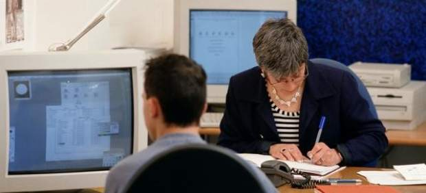
El Gobierno ha puesto en marcha desde este lunes por la tarde el procedimiento de consulta pública de la Ley de transparencia, acesso a la información pública y el buen Gobierno. Los ciudadanos ya pueden acceder a la web Ley de transparencia para leer el borrador del anteproyecto de ley y realizar sus comentarios sobre el mismo.
En dicha página se podrán encontrar dos apartados. El primero es "Texto del anteproyecto de ley", donde se puede encontrar de manera esquemática el texto de la norma (para elegir un artículo concreto) o bien leerlo de un tirón desde el principio.
El segundo apartado, denominado "Consulta pública", ofrece un formulario para que los internautas puedan enviar sus comentarios, que serán recogidos y valorados posteriormente.
Difusión en las webs ministeriales
La página es accesible también desde la web de cada Ministerio gracias a un banner que invita a la participación y que servirá de enlace. En este punto tienen también un papel relevante las redes sociales institucionales del Ministerio de la Presidencia, que darán a conocer el texto y canalizarán las aportaciones que se realicen.
Según reza el comunicado de presidencia, "el Gobierno quiere con este procedimiento atender propuestas y dar la máxima publicidad a este proceso de información pública".
2012-03-26T06:10:13Z
Trece personas mueren en accidentes de tráfico durante el último fin de semana
Trece personas mueren en accidentes de tráfico durante el último fin de semana
20MINUTOS.ES
Se han producido doce accidentes mortales.
Ocho personas han resultado heridas, la mitad graves.
En lo que se lleva de 2012, 279 personas han muerto en la carretera.
Trece personas ha fallecido en los doce accidentes mortales de tráficos producidos durante el último fin de semana en las carreteras españolas. Además, ocho personas han resultado heridas, cuatro leves y otras tantas graves, según informa la Dirección General de Tráfico (DGT).Del total de accidentes, seis fueron colisiones, cinco salidas de la vía y uno fue un atropello. De los trece fallecidos, tres eran motoristas.En el acumulado anual, hasta el 25 de marzo, se llevan contabilizados 279 fallecidos, 16 menos que hasta la misma fecha del año pasado, lo que representa un descenso del 5,5%.En el mismo fin de semana del año pasado (último de marzo), fallecieron cinco personas en las carreteras españolas.
20MINUTOS.ES
- Se han producido doce accidentes mortales.
- Ocho personas han resultado heridas, la mitad graves.
- En lo que se lleva de 2012, 279 personas han muerto en la carretera.
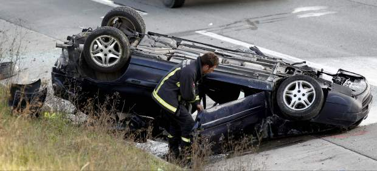
Trece personas ha fallecido en los doce accidentes mortales de tráficos producidos durante el último fin de semana en las carreteras españolas. Además, ocho personas han resultado heridas, cuatro leves y otras tantas graves, según informa la Dirección General de Tráfico (DGT).
Del total de accidentes, seis fueron colisiones, cinco salidas de la vía y uno fue un atropello. De los trece fallecidos, tres eran motoristas.
En el acumulado anual, hasta el 25 de marzo, se llevan contabilizados 279 fallecidos, 16 menos que hasta la misma fecha del año pasado, lo que representa un descenso del 5,5%.
En el mismo fin de semana del año pasado (último de marzo), fallecieron cinco personas en las carreteras españolas.
2012-03-25T22:54:35Z
Cascos y 'Cherines' tienden la mano al "diálogo" y al "pacto" frente a la victoria del PSOE
Cascos y 'Cherines' tienden la mano al "diálogo" y al "pacto" frente a la victoria del PSOE
EFE / VIDEO: ATLAS
Javier Fernández (PSOE) celebra el triunfo pero lamenta la baja participación.
Francisco Álvarez-Cascos (Foro) se ofrece a dialogar posibles acuerdos de Gobierno.
Para Mercedes Fernández (PP), repetir con 10 diputados no es "satisfactorio".
Jesús Iglesias (IU) se compromete a trabajar con "más fuerza y compromiso".
Ignacio Prendes (UPyD) da por "cumplido" el objetivo de su formación.
El PSOE ha ganado las elecciones autonómicas de Asturias, aunque tendrá que esperar para saber si gobernará o no el Principado. La cuestión ahora es determinar cómo se va a formar el Gobierno, ya que el PSOE no ha obtenido mayoría absoluta necesaria para gobernar en solitario, algo con lo que sí cuentan Foro y PP si suman sus escaños. Francisco Álvarez-Cascos y Mercedes Fernández no han tardado en ofrecer su disposición a dialogar para llegar a acuerdos de Gobierno.Los comicios asturianos han terminado además con la novedad de que el partido de Rosa Díez, UPyD, ha conseguido un escaño y por tanto, entra a formar parte por primera vez del Parlamento asturiano.Javier Fernández (PSOE): "Estoy dispuesto a asumir la responsabilidad de gobernar"El candidato del PSOE a la Presidencia del Principado, Javier Fernández, ha destacado este domingo el triunfo de su partido en las elecciones autonómicas y ha asegurado que se muestra dispuesto a asumir la responsabilidad de gobernar en Asturias. Fernández ha realizado estas declaraciones al finalizar el escrutinio que otorga al PSOE 16 diputados, 13 a Foro, 10 al PP, 5 a IU y 1 a UPyD, en el Hotel Ayre de Oviedo ante numerosos simpatizantes y miembros del partido. El secretario general de la Federación Socialista Asturiana (FSA-PSOE) ha lamentado el alto índice de abstención registrado en las elecciones que, a su juicio, se ha debido a lo que ha ocurrido todos estos meses en Asturias.Francisco Álvarez-Cascos (Foro): "Dialogar no es amagar, ni suplantar, ni sustituir, sino sumar"El presidente de Foro, Francisco Álvarez-Cascos, ha felicitado al PSOE por su victoria en las elecciones autonómicas de Asturias y ha subrayado que su partido se asienta como segunda fuerza. Por eso, ha considerado imprescindibles los acuerdos, para los que ha anunciado su empeño en dialogar. Álvarez-Cascos ha resaltado que serán imprescindibles el diálogo, los acuerdos, las renuncias parciales, aceptar tesis ajenas, la colaboración y el respeto. Con esa intención, Foro "tiende la mano" a las formaciones políticas que pretendan sacar a Asturias de la decadencia y apuesten por el progreso, siempre con la preservación de los servicios esenciales, la sanidad, la educación y el bienestar social, como prioridad. "Dialogar no es amagar, ni suplantar, ni sustituir, sino sumar", ha apuntado Cascos en su comparecencia ante los periodistas en el hotel en el que Foro ha seguido la noche electoral. También ha destacado que no se siente una persona instalada en los cargos públicos, por lo que personalmente estará en el lugar en el que sus compañeros de partido le asignen, porque, ha añadido: "No todos somos iguales, no todos estamos dispuestos a compadrear para que todo siga como estaba". Además de felicitar al Partido Socialista, también ha felicitado a UPyD porque estrena presencia parlamentaria, "un reflejo del pluralismo de la sociedad asturiana". Sobre el resultado de Foro ha señalado que "se asienta en el segundo lugar" y demuestra "resistir con fortaleza el empuje sin precedentes de los dos grandes partidos", mientras que sobre el PP ha indicado que es tercero y sin aumentar su representación. Mercedes Fernández: "Los resultados no son satisfactorios"La candidata del PP a la Presidencia del Principado de Asturias, Mercedes Fernández, ha dicho que los resultados obtenidos por su partido, que ha repetido los diez diputados de la anterior legislatura, "no son satisfactorios" y ha reiterado la disposición "permanente y constante" de su formación para mantener el diálogo ante una posible negociación con Foro. Los datos sobre el bajo índice de participación indican, ha declarado Mercedes Fernández, que Asturias "no necesitaba" un nuevo proceso electoral, en el que los diez escaños obtenidos por el PP son un resultado "insuficiente" cuando el objetivo era "ganar las elecciones". "Pacto y consenso" han sido los términos utilizados por la candidata del PP, que ha reiterado la actitud "positiva" en favor del diálogo para lograr la gobernabilidad en la región, sobre el que ha apuntado que tiene que ser en "dos direcciones". Mercedes Fernández, que entiende que los resultados evidencian "gran fragmentación" en el mapa político asturiano.Jesús Iglesias (IU): "Hay que trabajar con más fuerza y compromiso"El candidato de Izquierda Unida a la presidencia de Asturias, Jesús Iglesias, se ha comprometido a seguir trabajando "con más fuerza y compromiso" por los asturianos en el parlamento. Iglesias ha reconocido que está "animado por los resultados" de los comicios en los que IU ha conseguido cinco escaños, uno más de los que obtuvo la formación en las elecciones autonómicas de 2011. Iglesias ha realizado estas manifestaciones durante su comparecencia ante los medios de comunicación en el Hotel Barceló Cervantes de Oviedo.Ignacio Prendes (UPyD): "Objetivo cumplido"El candidato de UPyD a la Presidencia del Principado, Ignacio Prendes, ha dado por "cumplido" el objetivo de la formación de Rosa Díez después de que se haya confirmado que obtiene un diputado en la Junta General del Principado.Prendes ha declarado ante los periodistas que UPyD es la que "la que más crece en votos y en porcentaje" de apoyos (un 27 por ciento) respecto a las elecciones autonómicas de mayo. Con el 99,93% de los votos escrutados, Prendes se había garantizado un hueco en el Parlamento asturiano con más de 18.000 votos.En una comparecencia ante los militantes, Prendes ha lamentado el alto índice de abstención que es fruto, ha dicho, del desencanto que ha dejado a muchos asturianos "sin perspectivas". La recuperación de ese alto porcentaje de asturianos que este domingo no han acudido a votar va a ser su objetivo prioritario, "dentro del Parlamento y fuera, en la calle".
EFE / VIDEO: ATLAS
- Javier Fernández (PSOE) celebra el triunfo pero lamenta la baja participación.
- Francisco Álvarez-Cascos (Foro) se ofrece a dialogar posibles acuerdos de Gobierno.
- Para Mercedes Fernández (PP), repetir con 10 diputados no es "satisfactorio".
- Jesús Iglesias (IU) se compromete a trabajar con "más fuerza y compromiso".
- Ignacio Prendes (UPyD) da por "cumplido" el objetivo de su formación.
El PSOE ha ganado las elecciones autonómicas de Asturias, aunque tendrá que esperar para saber si gobernará o no el Principado. La cuestión ahora es determinar cómo se va a formar el Gobierno, ya que el PSOE no ha obtenido mayoría absoluta necesaria para gobernar en solitario, algo con lo que sí cuentan Foro y PP si suman sus escaños. Francisco Álvarez-Cascos y Mercedes Fernández no han tardado en ofrecer su disposición a dialogar para llegar a acuerdos de Gobierno.
Los comicios asturianos han terminado además con la novedad de que el partido de Rosa Díez, UPyD, ha conseguido un escaño y por tanto, entra a formar parte por primera vez del Parlamento asturiano.
Javier Fernández (PSOE): "Estoy dispuesto a asumir la responsabilidad de gobernar"
El candidato del PSOE a la Presidencia del Principado, Javier Fernández, ha destacado este domingo el triunfo de su partido en las elecciones autonómicas y ha asegurado que se muestra dispuesto a asumir la responsabilidad de gobernar en Asturias.
Fernández ha realizado estas declaraciones al finalizar el escrutinio que otorga al PSOE 16 diputados, 13 a Foro, 10 al PP, 5 a IU y 1 a UPyD, en el Hotel Ayre de Oviedo ante numerosos simpatizantes y miembros del partido.
El secretario general de la Federación Socialista Asturiana (FSA-PSOE) ha lamentado el alto índice de abstención registrado en las elecciones que, a su juicio, se ha debido a lo que ha ocurrido todos estos meses en Asturias.
Francisco Álvarez-Cascos (Foro): "Dialogar no es amagar, ni suplantar, ni sustituir, sino sumar"
El presidente de Foro, Francisco Álvarez-Cascos, ha felicitado al PSOE por su victoria en las elecciones autonómicas de Asturias y ha subrayado que su partido se asienta como segunda fuerza. Por eso, ha considerado imprescindibles los acuerdos, para los que ha anunciado su empeño en dialogar.
Álvarez-Cascos ha resaltado que serán imprescindibles el diálogo, los acuerdos, las renuncias parciales, aceptar tesis ajenas, la colaboración y el respeto. Con esa intención, Foro "tiende la mano" a las formaciones políticas que pretendan sacar a Asturias de la decadencia y apuesten por el progreso, siempre con la preservación de los servicios esenciales, la sanidad, la educación y el bienestar social, como prioridad.
"Dialogar no es amagar, ni suplantar, ni sustituir, sino sumar", ha apuntado Cascos en su comparecencia ante los periodistas en el hotel en el que Foro ha seguido la noche electoral. También ha destacado que no se siente una persona instalada en los cargos públicos, por lo que personalmente estará en el lugar en el que sus compañeros de partido le asignen, porque, ha añadido: "No todos somos iguales, no todos estamos dispuestos a compadrear para que todo siga como estaba".
Además de felicitar al Partido Socialista, también ha felicitado a UPyD porque estrena presencia parlamentaria, "un reflejo del pluralismo de la sociedad asturiana". Sobre el resultado de Foro ha señalado que "se asienta en el segundo lugar" y demuestra "resistir con fortaleza el empuje sin precedentes de los dos grandes partidos", mientras que sobre el PP ha indicado que es tercero y sin aumentar su representación.
Mercedes Fernández: "Los resultados no son satisfactorios"
La candidata del PP a la Presidencia del Principado de Asturias, Mercedes Fernández, ha dicho que los resultados obtenidos por su partido, que ha repetido los diez diputados de la anterior legislatura, "no son satisfactorios" y ha reiterado la disposición "permanente y constante" de su formación para mantener el diálogo ante una posible negociación con Foro.
Los datos sobre el bajo índice de participación indican, ha declarado Mercedes Fernández, que Asturias "no necesitaba" un nuevo proceso electoral, en el que los diez escaños obtenidos por el PP son un resultado "insuficiente" cuando el objetivo era "ganar las elecciones".
"Pacto y consenso" han sido los términos utilizados por la candidata del PP, que ha reiterado la actitud "positiva" en favor del diálogo para lograr la gobernabilidad en la región, sobre el que ha apuntado que tiene que ser en "dos direcciones". Mercedes Fernández, que entiende que los resultados evidencian "gran fragmentación" en el mapa político asturiano.
Jesús Iglesias (IU): "Hay que trabajar con más fuerza y compromiso"
El candidato de Izquierda Unida a la presidencia de Asturias, Jesús Iglesias, se ha comprometido a seguir trabajando "con más fuerza y compromiso" por los asturianos en el parlamento. Iglesias ha reconocido que está "animado por los resultados" de los comicios en los que IU ha conseguido cinco escaños, uno más de los que obtuvo la formación en las elecciones autonómicas de 2011. Iglesias ha realizado estas manifestaciones durante su comparecencia ante los medios de comunicación en el Hotel Barceló Cervantes de Oviedo.
Ignacio Prendes (UPyD): "Objetivo cumplido"
El candidato de UPyD a la Presidencia del Principado, Ignacio Prendes, ha dado por "cumplido" el objetivo de la formación de Rosa Díez después de que se haya confirmado que obtiene un diputado en la Junta General del Principado.
Prendes ha declarado ante los periodistas que UPyD es la que "la que más crece en votos y en porcentaje" de apoyos (un 27 por ciento) respecto a las elecciones autonómicas de mayo. Con el 99,93% de los votos escrutados, Prendes se había garantizado un hueco en el Parlamento asturiano con más de 18.000 votos.
En una comparecencia ante los militantes, Prendes ha lamentado el alto índice de abstención que es fruto, ha dicho, del desencanto que ha dejado a muchos asturianos "sin perspectivas". La recuperación de ese alto porcentaje de asturianos que este domingo no han acudido a votar va a ser su objetivo prioritario, "dentro del Parlamento y fuera, en la calle".
2012-03-25T22:44:26Z
La participación cayó en picado en Andalucía y en Asturias, 10 puntos menos en ambos casos
La participación cayó en picado en Andalucía y en Asturias, 10 puntos menos en ambos casos
AGENCIAS / VÍDEO: ATLAS ·
En Andalucía votó el 62% y en Asturias tan solo el 55% del electorado.
Solo dos colegios en Cádiz y Huelva retrasaron su apertura por falta de papeletas y ausencia de los miembros de la mesa, respectivamente.
La paradoja del 25-M: los ganadores no gobernarán .
La participación en las elecciones andaluzas y asturianas de este 25 de marzo se ha reducido considerablemente respecto a las últimas autonómicas en cada comunidad.En Andalucía, la participación final fue algo más elevada, pero aún así se quedó en el 62,22% del electorado frente al 72,67 de 2008 (10,44 puntos menos). Esta tendencia ya se notaba a las 18.00 horas, cuando había votado el 47,21%, mientras que en las autonómicas de 2008 lo hizo el 59,54% a la misma hora. Este dato empeora el de las 14.00, hora a la que ejerció su derecho al sufragio el 29,30% del electorado, cuando en 2008 acudieron a los colegios el 39,08% de votantes.En Asturias fue del 55,92%, frente las 66,89% de los anteriores comicios (10,97 puntos menos). A las 18.00 horas habían votado un 42,68% del electorado, un 8,61% menos que en mayo de 2011, donde a la misma hora ejercieron su voto el 51,29%. A las 14.00 horas, había votado el 26,60% del electorado, más de un 8% menos que el pasado año.Todos han votado por la mañanaEn la comunidad andaluza, Javier Arenas (PP), depositó su sufragio en una urna del Instituto de Enseñanza Secundaria Politécnico de Sevilla, donde declaróo que los andaluces acudían a una cita con las urnas "crucial", a la vez que esperaba que estas elecciones sirvan para la "esperanza de cara al futuro".Sobre las 10.30, en el Colegio Aljarafe de Mairena, votó el candidato socialista, José Antonio Griñán. El aspirante a la reelección ha calificado de "trascendentes" estos comicios y de las que esperaba que salga un gobierno "estable" para los próximos años.Poco antes de las 10.00, Diego Valderas (IU) acudióa votar a un colegio de su localidad natal, Bollullos Par del Condado, en Huelva. El líder de la coalición apeló a "obedecer democraticamente el mandato de las urnas".El candidato de UPyD, Martín de la Herrán, que votó en Cádiz, afirmó que este domingo era el día de "escoger el rumbo que queremos que tome Andalucía" en una jornada electoral "de responsabilidad de todos los ciudadanos" a la hora de "ejercer los derechos constitucionales".Fernández y Prendes, los madrugadores de AsturiasEl candidato del PSOE a la Presidencia del Principado de Asturias, Javier Fernández, ejerció su derecho al voto cerca de las 10.00 horas en el Palacio de los Deportes de la Guía. Allí, resaltó la importancia que tienen las elecciones autonómicas para la región y esperaba que fuera un día "magnífico" para la democracia asturiana.Aún más madrugador para el voto fue el candidato de UPyD, Ignacio Prendes, que reveló que su partido mantenía la esperanza de conseguir al menos un diputado regional como finalmente ocurrió.La candidata del PP, Mercedes Fernández, aseguró que en esta jornada electoral, a la que se refirió como "intensa y apasionante", todos los asturianos se juegban mucho e incidió en que había que poner fin a una etapa de "mucha incertidumbre e inactividad".Así manifestó tras depositar su voto en las urnas en torno a las 12.00 horas en un colegio electoral del centro de Gijón, donde estiuvo acompañada por su marido.El candidato a la reelección, Francisco Álvarez-Cascos (Foro), que ha depositado su papeleta en una urna del Colegio Público Ramón Muñoz de Luarca sobre las 10.45, ha asegurado que votar es "mucho más que elegir", y ha calificado este 25 de marzo como el de la "reflexión definitiva o decisiva".Los resultados andaluces, un poco más tardeLos retrasos en la constitución de las mesas electorales de dos colegios de San Juan del Puerto (Huelva) y de uno de San Fernando (Cádiz) llevaron a que el Gobierno andaluz no pudiera hacer públicos en la página web habilitada a tal efecto los primeros datos sobre resultados hasta las 20.50 horas, 50 minutos más tarde de lo previsto, según una resolución aprobada a lo largo de la jornada de este domingo por la Junta Electoral.En San Juan del Puerto (Huelva) faltaron papeletas y sobres en una mesa electoral, lo que provocó media hora de retraso en la apertura y la Junta Electoral de Zona decididió cerrar la votación treinta minutos más tarde.En el colegio Camposoto de San Fernando (Cádiz) se dio la circunstancia de que no se presentaron ni los titulares ni los suplentes de una mesa, por un error de notificación, y la fuerzas de seguridad tuvieron que ir a buscarlos a sus domicilios.
AGENCIAS / VÍDEO: ATLAS
·
- En Andalucía votó el 62% y en Asturias tan solo el 55% del electorado.
- Solo dos colegios en Cádiz y Huelva retrasaron su apertura por falta de papeletas y ausencia de los miembros de la mesa, respectivamente.
- La paradoja del 25-M: los ganadores no gobernarán .
La participación en las elecciones andaluzas y asturianas de este 25 de marzo se ha reducido considerablemente respecto a las últimas autonómicas en cada comunidad.
- En Andalucía, la participación final fue algo más elevada, pero aún así se quedó en el 62,22% del electorado frente al 72,67 de 2008 (10,44 puntos menos). Esta tendencia ya se notaba a las 18.00 horas, cuando había votado el 47,21%, mientras que en las autonómicas de 2008 lo hizo el 59,54% a la misma hora. Este dato empeora el de las 14.00, hora a la que ejerció su derecho al sufragio el 29,30% del electorado, cuando en 2008 acudieron a los colegios el 39,08% de votantes.
- En Asturias fue del 55,92%, frente las 66,89% de los anteriores comicios (10,97 puntos menos). A las 18.00 horas habían votado un 42,68% del electorado, un 8,61% menos que en mayo de 2011, donde a la misma hora ejercieron su voto el 51,29%. A las 14.00 horas, había votado el 26,60% del electorado, más de un 8% menos que el pasado año.
Todos han votado por la mañana
En la comunidad andaluza, Javier Arenas (PP), depositó su sufragio en una urna del Instituto de Enseñanza Secundaria Politécnico de Sevilla, donde declaróo que los andaluces acudían a una cita con las urnas "crucial", a la vez que esperaba que estas elecciones sirvan para la "esperanza de cara al futuro".
Sobre las 10.30, en el Colegio Aljarafe de Mairena, votó el candidato socialista, José Antonio Griñán. El aspirante a la reelección ha calificado de "trascendentes" estos comicios y de las que esperaba que salga un gobierno "estable" para los próximos años.
Poco antes de las 10.00, Diego Valderas (IU) acudióa votar a un colegio de su localidad natal, Bollullos Par del Condado, en Huelva. El líder de la coalición apeló a "obedecer democraticamente el mandato de las urnas".
El candidato de UPyD, Martín de la Herrán, que votó en Cádiz, afirmó que este domingo era el día de "escoger el rumbo que queremos que tome Andalucía" en una jornada electoral "de responsabilidad de todos los ciudadanos" a la hora de "ejercer los derechos constitucionales".
Fernández y Prendes, los madrugadores de Asturias
El candidato del PSOE a la Presidencia del Principado de Asturias, Javier Fernández, ejerció su derecho al voto cerca de las 10.00 horas en el Palacio de los Deportes de la Guía. Allí, resaltó la importancia que tienen las elecciones autonómicas para la región y esperaba que fuera un día "magnífico" para la democracia asturiana.
Aún más madrugador para el voto fue el candidato de UPyD, Ignacio Prendes, que reveló que su partido mantenía la esperanza de conseguir al menos un diputado regional como finalmente ocurrió.
La candidata del PP, Mercedes Fernández, aseguró que en esta jornada electoral, a la que se refirió como "intensa y apasionante", todos los asturianos se juegban mucho e incidió en que había que poner fin a una etapa de "mucha incertidumbre e inactividad".
Así manifestó tras depositar su voto en las urnas en torno a las 12.00 horas en un colegio electoral del centro de Gijón, donde estiuvo acompañada por su marido.
El candidato a la reelección, Francisco Álvarez-Cascos (Foro), que ha depositado su papeleta en una urna del Colegio Público Ramón Muñoz de Luarca sobre las 10.45, ha asegurado que votar es "mucho más que elegir", y ha calificado este 25 de marzo como el de la "reflexión definitiva o decisiva".
Los resultados andaluces, un poco más tarde
Los retrasos en la constitución de las mesas electorales de dos colegios de San Juan del Puerto (Huelva) y de uno de San Fernando (Cádiz) llevaron a que el Gobierno andaluz no pudiera hacer públicos en la página web habilitada a tal efecto los primeros datos sobre resultados hasta las 20.50 horas, 50 minutos más tarde de lo previsto, según una resolución aprobada a lo largo de la jornada de este domingo por la Junta Electoral.
En San Juan del Puerto (Huelva) faltaron papeletas y sobres en una mesa electoral, lo que provocó media hora de retraso en la apertura y la Junta Electoral de Zona decididió cerrar la votación treinta minutos más tarde.
En el colegio Camposoto de San Fernando (Cádiz) se dio la circunstancia de que no se presentaron ni los titulares ni los suplentes de una mesa, por un error de notificación, y la fuerzas de seguridad tuvieron que ir a buscarlos a sus domicilios.